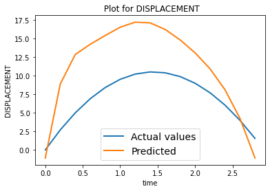
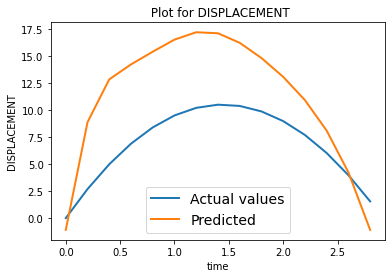

Adding air resistance
Contents

Adding air resistance¶
Let us make our simulation more interesting by adding the contribution of air resistance during the travel. To keep it a bit simple, we consider the quadratic drag model for a projectile from here and here for which the equations of motion are given below.
\(v_{term} = \sqrt{\frac{mg}{c}}\), where \(c = \frac{π}{16}\rho D^2\)
For the forward motion from the ground to the top (Ascent)
\(v_t = u_0 - v_{term} tan\left(\frac{gt}{v_{term}}\right)\)
\(s_t = u_0t + \frac{v_{term}^2}{g} ln\left(cos\left(\frac{gt}{v_{term}}\right)\right) \)
\(T_{ascent} = \frac{v_{term}}{g} tan^{-1}\left(\frac{u_0}{v_{term}}\right)\)
For the return motion from the top to the ground (Descent)
\(v_t = -v_{term} tanh\left(\frac{g(t-T_{ascent})}{v_{term}}\right)\)
\(s_t = H_{max}-\frac{v_{term}^2}{g} ln\left(cosh\left(\frac{g(t-T_{ascent})}{v_{term}}\right)\right)\)
\(T_{descent} = \frac{v_{term}}{g} cosh^{-1}\left(e^{\frac{gH_{max}}{v_{term}^2}}\right)\)
Total time of flight
\(T_{flight} = T_{ascent}+T_{descent}\)
The Simulation¶
We first show a simulation of this using pure physics equations. For simplicity let us target the velocity first, as it is linear with time.
# Import necessary modules
import matplotlib.pyplot as plt
import math
import numpy as np
# Effective constants
m = 30 # Mass of projectile in grams(g)
g = 9.8 # Acceleration due to gravity in m/s^2
density = 1.225 # Air density is 1.225 kg/m^3
D = 2 # Diameter of the projected object in cm
c = (math.pi/16)*(density)*(D*D)
v_term = math.sqrt((10*m*abs(g))/c)
def time_of_flight(u_initial, medium):
if medium=='VACCUM':
return 2*u_initial/(g)
elif medium=='AIR_QUADRATIC_DRAG':
T_ascent = (v_term/g)*math.atan(u_initial/v_term)
H_max = u_initial*T_ascent + ((v_term*v_term)/g)*math.log(math.cos((g*T_ascent)/v_term))
T_descent = (v_term/g)*math.acosh(math.exp((g*H_max)/(v_term*v_term)))
T_flight = T_ascent+T_descent
return T_flight
else:
return "UNK"
# Velocity of the particle at time step T. Initial velocity of the particle is u.
def velocity_t(u_initial, t, medium):
if medium=='VACCUM':
return u_initial - g*t
elif medium=='AIR_QUADRATIC_DRAG':
T_ascent = (v_term/g)*math.atan(u_initial/v_term)
if t <= T_ascent:
return u_initial - v_term*math.tan((g*t)/v_term)
else:
return u_initial*0.0- v_term*math.tanh((g*(t-T_ascent))/v_term)
else:
return "UNK"
# Displacement by the particle
def displacement_t(u_initial, t, medium):
if medium=='VACCUM':
return u_initial*t-(1/2)*g*t*t
elif medium=='AIR_QUADRATIC_DRAG':
T_ascent = (v_term/g)*math.atan(u_initial/v_term)
if t <= T_ascent:
s_t = u_initial*t + ((v_term*v_term)/g)*math.log(math.cos((g*t)/v_term))
return s_t
else:
H_max = u_initial*T_ascent + ((v_term*v_term)/g)*math.log(math.cos((g*T_ascent)/v_term))
s_t = H_max - ((v_term*v_term)/g)*math.log(math.cosh((g*(t-T_ascent))/v_term))
return s_t
else:
return "UNK"
def simulate_flight(u_initial, medium):
T = time_of_flight(u_initial, medium) # time of flight
t = 0
times = []
velocities = []
displacements = []
# calculate velocity at evert time step (of one second interval)
while t <= T:
v_t = velocity_t(u_initial, t, medium)
s_t = displacement_t(u_initial, t, medium)
times.append(t)
velocities.append(v_t)
displacements.append(s_t)
t = t+(1/5)
return times, velocities, displacements
# Plot the simulation
def plot_simulation(times, velocities, displacements):
plt.plot(times, velocities)
plt.plot(times, displacements)
plt.ylabel('velocity')
plt.xlabel('time')
plt.show()
# Testing the simulation
# mode = 'VACCUM'
medium = 'AIR_QUADRATIC_DRAG'
times, velocities, displacements = simulate_flight(117.09523409, medium)
plot_simulation(times, velocities, displacements)

The Data¶
Now that we have a physics simulation, let us run few simulations and collect the data. i,e we input few random initial velocities, times and get the corresponding velocities during the flight.
For this specific task, let us keep the initial velocities between \(0\) to \(100\) and time step range betwen \(0\) to time of flight \(T.\)
The collected data would look like this, \(X, Y\) where
\(X = (u, t), Y = (v)\)
\(u, t\) represent initial velocity and time step, where as \(v\) represents corresponding velocity.
import numpy as np
# Min and Max of initial velocity (in m/s)
U0_MIN = 0
U0_MAX = 100
def create_data(N_DATA_SAMPLES, D_TYPE, medium, U0_MIN=U0_MIN, U0_MAX=U0_MAX):
if D_TYPE not in ['VELOCITY', 'DISPLACEMENT', 'VELOCITY_DISPLACEMENT']:
return
data = []
for i in range(N_DATA_SAMPLES):
u0 = U0_MIN + np.random.rand(1)*(U0_MAX - U0_MIN)
T = time_of_flight(u0, medium)
t = np.random.rand(1)*T
v_t = velocity_t(u0, t, medium)
s_t = displacement_t(u0, t, medium)
# create a data point
Y = None
if D_TYPE=='VELOCITY':
Y = np.array([v_t])
elif D_TYPE=='DISPLACEMENT':
Y = np.array([s_t])
elif D_TYPE=='VELOCITY_DISPLACEMENT':
Y = np.array([v_t, s_t])
else:
return
# print(Y)
datapoint = (np.array([u0, t]), Y)
data.append(datapoint)
print("Dataset created!!")
print("Dataset size", len(data))
return data
Only Deep Learing based approach¶
We have collectd some data, Let us use a simple neural network to train upon that data to predict the velocity \(v_t\) at a time \(t\), given an initial veclocity \(u_0\).
We will be experimenting with various models, train them and try the inference.
# Necessary modules
import torch
import torch.nn as nn
from torch.utils.data import Dataset, DataLoader
import torch.optim as optim
device = torch.device("cuda:0" if torch.cuda.is_available() else "cpu")
print(device)
cuda:0
def compare_plot(times, actual, predicted, D_TYPE):
plt.figure()
plt.title(f" Plot for {D_TYPE}")
plt.plot(times, actual, linewidth=2, label='Actual values')
plt.plot(times, predicted, linewidth=2, label='Predicted')
plt.ylabel(D_TYPE)
plt.xlabel('time')
plt.legend(fontsize=14)
plt.show()
# Plotting the train loss curve
def loss_plot(epochs, losses):
plt.figure()
plt.plot(epochs, losses, 'r')
plt.ylabel("Loss")
plt.xlabel('Epoch')
plt.show()
Dataset¶
Let us define the appropriate dataset.
# Dataset
class PhysicsData(Dataset):
def __init__(self, data):
self.data = data
def __len__(self):
return len(self.data)
def __getitem__(self, index):
return self.data[index]
Inference¶
Let us first create and keep the inference part ready, so that we could infer and check the infered simulation on any trained network. This will make our life easier to test with various models we might try out until a good fitting one is found.
This is to infer the output for a single input, say at time \(t\), for given initial velocity \(u_0\)
# Infer the output for a single input (at time t, given initial velocity) on the trained network.
# Assuming model is already transferred to the device.
def single_inference(D_TYPE, model, u0, t):
input = torch.tensor([[u0, t]])
input = input.unsqueeze(0)
input = input.to(device)
output = model(input.float())
output = output.cpu().data.numpy()
if D_TYPE=='VELOCITY':
return output[0][0][0], 0
elif D_TYPE=='DISPLACEMENT':
return 0, output[0][0][0]
elif D_TYPE=='VELOCITY_DISPLACEMENT':
return output[0][0][0], output[0][0][1]
else:
return
Now, let us use the single inference to infer the whole simulation, given the initial velocity \(u_0\)
def simulation_inference(D_TYPE, model, u0, medium):
model = model.to(device)
T = time_of_flight(u0, medium) # time of flight
t = 0
times = []
velocities = []
displacements = []
# calculate velocity at evert time step (of one second interval)
while t <= T:
v_t = None
s_t = None
v_t, s_t = single_inference(D_TYPE, model, u0, t)
times.append(t)
velocities.append(v_t)
displacements.append(s_t)
t = t+(1/5)
return times, velocities, displacements
Training¶
We write the appropriate training module to train any generic model with specified parameters
# Training
def train(model, train_dataloader, optimizer, criterion, epochs, verbose=False):
model = model.to(device)
model.train()
all_epochs = []
all_losses = []
epoch_loss = 0.0
for epoch in range(epochs):
epoch_loss = 0.0
for i, batch in enumerate(train_dataloader):
X, Y = batch[0], batch[1]
X = torch.transpose(X, 1, 2)
Y = torch.transpose(Y, 1, 2)
X = X.to(device)
Y = Y.to(device)
Y_predicted = model(X.float())
optimizer.zero_grad()
loss = criterion(Y_predicted, Y.float(), X.float())
epoch_loss = epoch_loss+loss.item()
loss.backward()
optimizer.step()
if verbose:
print(f"epoch : {epoch+1}, loss : {epoch_loss/len(train_dataloader):.5f}")
else:
if epoch%10 == 0:
print(f"epoch : {epoch}, loss : {epoch_loss/len(train_dataloader):.5f}")
all_epochs.append(epoch+1)
all_losses.append(epoch_loss/len(train_dataloader))
print("Done Training!")
print(f"epoch : {epochs}, loss : {epoch_loss/len(train_dataloader):.5f}")
return model, all_losses, all_epochs
# Testing
def test(model, test_dataloader, criterion):
model = model.to(device)
model.eval()
total_loss = 0.0
with torch.no_grad():
for i, batch in enumerate(test_dataloader):
X, Y = batch[0], batch[1]
X = torch.transpose(X, 1, 2)
Y = torch.transpose(Y, 1, 2)
X = X.to(device)
Y = Y.to(device)
Y_predicted = model(X.float())
loss = criterion(Y_predicted, Y.float(), X.float())
total_loss = total_loss+loss.item()
avarage_loss = total_loss/len(test_dataloader)
print(f"Average loss : {avarage_loss:.5f}")
return avarage_loss
Models¶
Define various models.
# A Simple model for predicting only Velocity
class VelocityNewtonNet(nn.Module):
def __init__(self):
super().__init__()
self.nn1 = nn.Linear(in_features=2, out_features=5)
self.nn2 = nn.Linear(in_features=5, out_features=5)
self.nn3 = nn.Linear(in_features=5, out_features=1)
self.relu = nn.ReLU()
def forward(self, x):
x = self.nn1(x)
x = self.relu(x)
x = self.nn2(x)
x = self.relu(x)
x = self.nn3(x)
return x
# Simple model for predicting Displacement
# Similar to the Velocity Model, but has more neurons.
class DisplacementNewtonNet(nn.Module):
def __init__(self):
super().__init__()
self.nn1 = nn.Linear(in_features=2, out_features=16)
self.nn2 = nn.Linear(in_features=16, out_features=16)
self.nn3 = nn.Linear(in_features=16, out_features=1)
self.relu = nn.ReLU()
def forward(self, x):
x = self.nn1(x)
x = self.relu(x)
x = self.nn2(x)
x = self.relu(x)
x = self.nn3(x)
return x
# Simple model for predicting both Velocity and Displacement
class NewtonNet(nn.Module):
def __init__(self):
super().__init__()
self.nn1 = nn.Linear(in_features=2, out_features=16)
self.nn2 = nn.Linear(in_features=16, out_features=4)
self.nn3 = nn.Linear(in_features=4, out_features=2)
self.tanh = nn.Tanh()
def forward(self, x):
x = self.nn1(x)
x = self.tanh(x)
x = self.nn2(x)
x = self.tanh(x)
x = self.nn3(x)
return x
Experiments¶
We run experiments on various models, keep track of hyperparameters, run inference and try to find the best model for our goal.
Let us define custom Loss class to handle various losses we might design later
# Define custom loss
class CustomMSELoss(nn.Module):
def __init__(self):
super(CustomMSELoss, self).__init__()
self.mseLoss = nn.MSELoss()
def forward(self, Y_predicted, Y_actual, X):
loss = self.mseLoss(Y_predicted, Y_actual)
return loss
Predicting only Velocity¶
Let us use the simplest model, VelocityNewtonNet to predict velocity. We will create a dataset of 10000 entries for this.
N_DATA_SAMPLES = 10000
simulation_data_velocity = create_data(N_DATA_SAMPLES, 'VELOCITY', 'AIR_QUADRATIC_DRAG', 20, 120)
# simulation_data_velocity = create_data(N_DATA_SAMPLES, 'VELOCITY', 'VACCUM', 20, 120)
train_dataset_velocity_10000 = PhysicsData(simulation_data_velocity[:int(N_DATA_SAMPLES*0.8)])
test_dataset_velocity_10000 = PhysicsData(simulation_data_velocity[int(N_DATA_SAMPLES*0.8):])
Dataset created!!
Dataset size 10000
Train the network on the velocity dataset.
BATCH_SIZE = 16
model_v = VelocityNewtonNet()
train_dataloader_v = DataLoader(train_dataset_velocity_10000, batch_size=BATCH_SIZE, shuffle=True)
# optimizer_v = optim.SGD(model_v.parameters(), lr= 0.000001, momentum=0.9)
optimizer_v = optim.Adam(model_v.parameters(), lr = 0.0005)
criterion = CustomMSELoss()
epochs = 100
model_v, t_loss, t_epochs = train(model_v, train_dataloader_v, optimizer_v, criterion, epochs, verbose=False)
loss_plot(t_epochs, t_loss)
epoch : 0, loss : 1503.75759
epoch : 10, loss : 26.31486
epoch : 20, loss : 18.66192
epoch : 30, loss : 14.22097
epoch : 40, loss : 11.46101
epoch : 50, loss : 9.38373
epoch : 60, loss : 7.63458
epoch : 70, loss : 6.36066
epoch : 80, loss : 5.39865
epoch : 90, loss : 4.44989
Done Training!
epoch : 100, loss : 3.85312

Calculate the test loss and run few inferences to visualise the prediction.
# Test loss
test_dataloader_v = DataLoader(test_dataset_velocity_10000, batch_size=BATCH_SIZE, shuffle=True)
avg_loss = test(model_v, test_dataloader_v, criterion)
Average loss : 3.59959
# Run simulation and compare
U_INITIAL = 77.4356
times_p, velocities_p, displacements_p = simulation_inference('VELOCITY', model_v, U_INITIAL, 'AIR_QUADRATIC_DRAG')
times, velocities, displacements = simulate_flight(U_INITIAL, 'AIR_QUADRATIC_DRAG')
compare_plot(times, velocities, velocities_p, 'VELOCITY')
# Run simulation and compare, a case where it doesn't match exactly
U_INITIAL = 15
times_p, velocities_p, displacements_p = simulation_inference('VELOCITY', model_v, U_INITIAL, 'AIR_QUADRATIC_DRAG')
times, velocities, displacements = simulate_flight(U_INITIAL, 'AIR_QUADRATIC_DRAG')
compare_plot(times, velocities, velocities_p, 'VELOCITY')

# Run simulation and compare, a case where u0 is out of dataset domain
U_INITIAL = 230
times_p, velocities_p, displacements_p = simulation_inference('VELOCITY', model_v, U_INITIAL, 'AIR_QUADRATIC_DRAG')
times, velocities, displacements = simulate_flight(U_INITIAL, 'AIR_QUADRATIC_DRAG')
compare_plot(times, velocities, velocities_p, 'VELOCITY')
Predicting only Displacement¶
# Let us create a similar dataset for displacement task
N_DATA_SAMPLES = 10000
simulation_data_displacement = create_data(N_DATA_SAMPLES, 'DISPLACEMENT', 'AIR_QUADRATIC_DRAG', 20, 120)
train_dataset_displacement_10000 = PhysicsData(simulation_data_displacement [:int(N_DATA_SAMPLES*0.8)])
test_dataset_displacement_10000 = PhysicsData(simulation_data_displacement [int(N_DATA_SAMPLES*0.8):])
Dataset created!!
Dataset size 10000
BATCH_SIZE = 16
model_s = DisplacementNewtonNet()
train_dataloader_s = DataLoader(train_dataset_displacement_10000, batch_size=BATCH_SIZE, shuffle=True)
# optimizer_s = optim.SGD(model_s.parameters(), lr= 0.000001, momentum=0.9)
optimizer_s = optim.Adam(model_s.parameters(), lr = 0.005)
criterion = CustomMSELoss()
epochs = 100
model_s, t_loss, t_epochs = train(model_s, train_dataloader_s, optimizer_s, criterion, epochs, verbose=False)
loss_plot(t_epochs, t_loss)
epoch : 0, loss : 8053.06083
epoch : 10, loss : 127.89303
epoch : 20, loss : 38.93174
epoch : 30, loss : 45.98496
epoch : 40, loss : 36.11227
epoch : 50, loss : 25.85079
epoch : 60, loss : 37.63763
epoch : 70, loss : 23.48817
epoch : 80, loss : 25.91823
epoch : 90, loss : 21.98562
Done Training!
epoch : 100, loss : 18.71204
# Test loss
test_dataloader_s = DataLoader(test_dataset_displacement_10000, batch_size=BATCH_SIZE, shuffle=True)
avg_loss = test(model_s, test_dataloader_s, criterion)
Average loss : 12.75279
# Run simulation and compare
U_INITIAL = 87.4356
times_p, velocities_p, displacements_p = simulation_inference('DISPLACEMENT', model_s, U_INITIAL, 'AIR_QUADRATIC_DRAG')
times, velocities, displacements = simulate_flight(U_INITIAL, 'AIR_QUADRATIC_DRAG')
compare_plot(times, displacements, displacements_p, 'DISPLACEMENT')

# Run simulation and compare, a case where u0 is small
U_INITIAL = 15.434
times_p, velocities_p, displacements_p = simulation_inference('DISPLACEMENT', model_s, U_INITIAL, 'AIR_QUADRATIC_DRAG')
times, velocities, displacements = simulate_flight(U_INITIAL, 'AIR_QUADRATIC_DRAG')
compare_plot(times, displacements, displacements_p, 'DISPLACEMENT')

# Run simulation and compare, a case where u0 is not in dataset domain
U_INITIAL = 207.434
times_p, velocities_p, displacements_p = simulation_inference('DISPLACEMENT', model_s, U_INITIAL, 'AIR_QUADRATIC_DRAG')
times, velocities, displacements = simulate_flight(U_INITIAL, 'AIR_QUADRATIC_DRAG')
compare_plot(times, displacements, displacements_p, 'DISPLACEMENT')

Predicting both Velocity and Displacement¶
# Let us create a similar dataset for velocity, displacement task
N_DATA_SAMPLES = 10000
simulation_data_v_s = create_data(N_DATA_SAMPLES, 'VELOCITY_DISPLACEMENT', 'AIR_QUADRATIC_DRAG')
train_dataset_v_s_10000 = PhysicsData(simulation_data_v_s[:int(N_DATA_SAMPLES*0.8)])
test_dataset_v_s_10000 = PhysicsData(simulation_data_v_s[int(N_DATA_SAMPLES*0.8):])
Dataset created!!
Dataset size 10000
BATCH_SIZE = 16
model_v_s = NewtonNet()
train_dataloader_v_s = DataLoader(train_dataset_v_s_10000, batch_size=BATCH_SIZE, shuffle=True)
# optimizer_v_s = optim.SGD(model_v_s.parameters(), lr=0.000001, momentum=0.9)
optimizer_v_s = optim.Adam(model_v_s.parameters(), lr = 0.005)
criterion = CustomMSELoss()
epochs = 100
model_v_s, t_loss, t_epochs = train(model_v_s, train_dataloader_v_s, optimizer_v_s, criterion, epochs)
loss_plot(t_epochs, t_loss)
epoch : 0, loss : 7669.50986
epoch : 10, loss : 2308.47159
epoch : 20, loss : 609.57888
epoch : 30, loss : 142.09739
epoch : 40, loss : 58.79301
epoch : 50, loss : 36.60021
epoch : 60, loss : 37.26972
epoch : 70, loss : 30.18153
epoch : 80, loss : 45.67903
epoch : 90, loss : 24.67704
Done Training!
epoch : 100, loss : 26.65118
# Test loss
test_dataloader_v_s = DataLoader(test_dataset_v_s_10000, batch_size=BATCH_SIZE, shuffle=True)
avg_loss = test(model_v_s, test_dataloader_v_s, criterion)
Average loss : 46.03700
# Run simulation and compare
U_INITIAL = 77.4356
times_p, velocities_p, displacements_p = simulation_inference('VELOCITY_DISPLACEMENT', model_v_s, U_INITIAL, 'AIR_QUADRATIC_DRAG')
times, velocities, displacements = simulate_flight(U_INITIAL, 'AIR_QUADRATIC_DRAG')
compare_plot(times, velocities, velocities_p, 'VELOCITY')
compare_plot(times, displacements, displacements_p, 'DISPLACEMENT')

# Run simulation and compare, a case when u0 is small
U_INITIAL = 14.4356
times_p, velocities_p, displacements_p = simulation_inference('VELOCITY_DISPLACEMENT', model_v_s, U_INITIAL, 'AIR_QUADRATIC_DRAG')
times, velocities, displacements = simulate_flight(U_INITIAL, 'AIR_QUADRATIC_DRAG')
compare_plot(times, velocities, velocities_p, 'VELOCITY')
compare_plot(times, displacements, displacements_p, 'DISPLACEMENT')
 

# Run simulation and compare, case where u0 is not part of train set
U_INITIAL = 227.4356
times_p, velocities_p, displacements_p = simulation_inference('VELOCITY_DISPLACEMENT', model_v_s, U_INITIAL, 'AIR_QUADRATIC_DRAG')
times, velocities, displacements = simulate_flight(U_INITIAL, 'AIR_QUADRATIC_DRAG')
compare_plot(times, velocities, velocities_p, 'VELOCITY')
compare_plot(times, displacements, displacements_p, 'DISPLACEMENT')
Using Physics Knowledge for training¶
As we know some properties of the predicted values from physics, like the velocities over time lie on a line, displacements over time lie on a parabola and also \(v_t\), \(s_t\) have the following relation
\(v_t^2-u_0^2 = 2*g*s_t\)
Let us try to leverage this knowledge and see if it improves our model.
# Simple model for predicting both Velocity and Displacement
class PhysicsNewtonNet(nn.Module):
def __init__(self):
super().__init__()
self.nn1 = nn.Linear(in_features=2, out_features=16)
self.nn2 = nn.Linear(in_features=16, out_features=4)
self.nn3 = nn.Linear(in_features=4, out_features=2)
self.relu = nn.ReLU()
def forward(self, x):
x = self.nn1(x)
x = self.relu(x)
x = self.nn2(x)
x = self.relu(x)
x = self.nn3(x)
return x
Designing a Loss function¶
We are trying to predict two values namely \(v_t\) and \(s_t\). From our previous experiments, it is evident that prediction of velocity is fairly accurate even for a minimal network, however prediction of displacement is in accurate and kind of overfit.
1. Physics based loss¶
Leveraging the relationship between predicted values \(v_t\) and \(s_t\), let us try experimenting with the following loss purly based on physics.
\(L_{physics} = |v_{predicted}^2-u_{initial}^2-2*g*s_{predicted}| \)
# Define new loss
class PhysicsBasedLoss(nn.Module):
def __init__(self):
super(PhysicsBasedLoss, self).__init__()
def forward(self, Y_predicted, Y_actual, X):
v_predicted = Y_predicted[:, :, 0]
s_predicted = Y_predicted[:, :, 1]
u_initial = X[:, :, 0]
v_square_from_s = torch.add(torch.square(u_initial), 2*g*s_predicted)
v_square_from_predicted = torch.square(v_predicted)
difference = torch.subtract(v_square_from_predicted, v_square_from_s)
absolute_difference = torch.absolute(difference)
loss = torch.sum(absolute_difference)
return loss
# We will be using the same datset as for velocity_displacement task.
BATCH_SIZE = 16
model_v_s_phy = PhysicsNewtonNet()
train_dataloader_v_s = DataLoader(train_dataset_v_s_10000, batch_size=BATCH_SIZE, shuffle=True)
# optimizer_v_s_phy = optim.SGD(model_v_s_phy.parameters(), lr=0.0001, momentum=0.9)
optimizer_v_s_phy = optim.Adam(model_v_s_phy.parameters(), lr = 0.0005)
criterion = PhysicsBasedLoss()
epochs = 100
model_v_s_phy, t_loss, t_epochs = train(model_v_s_phy, train_dataloader_v_s, optimizer_v_s_phy, criterion, epochs)
loss_plot(t_epochs, t_loss)
epoch : 0, loss : 15284.45321
epoch : 10, loss : 56.99702
epoch : 20, loss : 78.31946
epoch : 30, loss : 82.70061
epoch : 40, loss : 68.65334
epoch : 50, loss : 67.46962
epoch : 60, loss : 77.81361
epoch : 70, loss : 69.43151
epoch : 80, loss : 62.02823
epoch : 90, loss : 56.12098
Done Training!
epoch : 100, loss : 66.00265

# Run simulation and compare
U_INITIAL = 87.4356
times_p, velocities_p, displacements_p = simulation_inference('VELOCITY_DISPLACEMENT', model_v_s_phy, U_INITIAL, 'AIR_QUADRATIC_DRAG')
times, velocities, displacements = simulate_flight(U_INITIAL, 'AIR_QUADRATIC_DRAG')
compare_plot(times, velocities, velocities_p, 'VELOCITY')
compare_plot(times, displacements, displacements_p, 'DISPLACEMENT')


# Run simulation and compare, smaller velocity
U_INITIAL = 14.4356
times_p, velocities_p, displacements_p = simulation_inference('VELOCITY_DISPLACEMENT', model_v_s_phy, U_INITIAL, 'AIR_QUADRATIC_DRAG')
times, velocities, displacements = simulate_flight(U_INITIAL, 'AIR_QUADRATIC_DRAG')
compare_plot(times, velocities, velocities_p, 'VELOCITY')
compare_plot(times, displacements, displacements_p, 'DISPLACEMENT')

# Run simulation and compare, out of domain velocity
U_INITIAL = 144.4356
times_p, velocities_p, displacements_p = simulation_inference('VELOCITY_DISPLACEMENT', model_v_s_phy, U_INITIAL, 'AIR_QUADRATIC_DRAG')
times, velocities, displacements = simulate_flight(U_INITIAL, 'AIR_QUADRATIC_DRAG')
compare_plot(times, velocities, velocities_p, 'VELOCITY')
compare_plot(times, displacements, displacements_p, 'DISPLACEMENT')


First of all, the model hasn’t converged fully. However, the predictions make sense as we are not using the time input. The model just learns to predict \(v_t, s_t\), such that the physics equation holds, but they need not be consistent with the one’s we are expecting in a flight. In this case, looks like the model is predictin \(s_t=0\), and therefore \(v_t\sim u_0\).
2. Velocity + Physics based loss¶
Let us try the folowing loss where we try to make the velocity closer to actual velocity but provide no ground truth information on displacement, rather we make use of the relation between \(v_t\), \(s_t\) to guide the learning.
\(L_{velocity+phy} = (v_{predicted}-v_{actual})^2+\gamma*(v_{predicted}^2-u_{initial}^2-2*g*s_{predicted})^2\)
\(\gamma\) is used to control weightage given to the physics term.
This will go to \(0\) only when \(v_{predicted} = v_{actual}\) and \(v_{predicted}^2-u_{initial}^2 = 2*g*s_{predicted}\), both of which yield correct prediction for \(v_t\) and \(s_t\)
class VelocityPlusPhysicsBasedLoss(nn.Module):
def __init__(self, gamma):
super(VelocityPlusPhysicsBasedLoss, self).__init__()
self.gamma = gamma
def forward(self, Y_predicted, Y_actual, X):
v_predicted = Y_predicted[:, :, 0]
s_predicted = Y_predicted[:, :, 1]
u_initial = X[:, :, 0]
v_square_from_s = torch.add(torch.square(u_initial), -2*g*s_predicted)
v_square_from_predicted = torch.square(v_predicted)
difference = torch.subtract(v_square_from_predicted, v_square_from_s)
squared_difference = torch.square(difference)
v_actual = Y_actual[:, :, 0]
difference_v = torch.subtract(v_predicted, v_actual)
squared_difference_v = torch.square(difference_v)
sqr_diff_sum = torch.add(squared_difference_v, self.gamma*squared_difference)
loss = torch.sum(sqr_diff_sum)
return loss
# We will be using the same datset as for velocity_displacement task.
BATCH_SIZE = 16
model_v_s_velocityPhy = PhysicsNewtonNet()
train_dataloader_v_s = DataLoader(train_dataset_v_s_10000, batch_size=BATCH_SIZE, shuffle=True)
# optimizer_v_s_velocityPhy = optim.SGD(model_v_s_velocityPhy.parameters(), lr=0.0001, momentum=0.9)
optimizer_v_s_velocityPhy = optim.Adam(model_v_s_velocityPhy.parameters(), lr = 0.0005)
criterion = VelocityPlusPhysicsBasedLoss(gamma=0.00001)
epochs = 100
model_v_s_velocityPhy, t_loss, t_epochs = train(model_v_s_velocityPhy, train_dataloader_v_s, optimizer_v_s_velocityPhy, criterion, epochs)
loss_plot(t_epochs, t_loss)
epoch : 0, loss : 17465.91528
epoch : 10, loss : 8435.02852
epoch : 20, loss : 463.27058
epoch : 30, loss : 417.98707
epoch : 40, loss : 394.90473
epoch : 50, loss : 372.11775
epoch : 60, loss : 347.94967
epoch : 70, loss : 321.92505
epoch : 80, loss : 299.87670
epoch : 90, loss : 277.13282
Done Training!
epoch : 100, loss : 257.55843

# Run simulation and compare
U_INITIAL = 77.4356
times_p, velocities_p, displacements_p = simulation_inference('VELOCITY_DISPLACEMENT', model_v_s_velocityPhy, U_INITIAL, 'AIR_QUADRATIC_DRAG')
times, velocities, displacements = simulate_flight(U_INITIAL, 'AIR_QUADRATIC_DRAG')
compare_plot(times, velocities, velocities_p, 'VELOCITY')
compare_plot(times, displacements, displacements_p, 'DISPLACEMENT')


# Run simulation and compare, a case when u0 is small
U_INITIAL = 14.4356
times_p, velocities_p, displacements_p = simulation_inference('VELOCITY_DISPLACEMENT', model_v_s_velocityPhy, U_INITIAL, 'AIR_QUADRATIC_DRAG')
times, velocities, displacements = simulate_flight(U_INITIAL, 'AIR_QUADRATIC_DRAG')
compare_plot(times, velocities, velocities_p, 'VELOCITY')
compare_plot(times, displacements, displacements_p, 'DISPLACEMENT')

# Run simulation and compare, case where u0 is not part of train set
U_INITIAL = 227.4356
times_p, velocities_p, displacements_p = simulation_inference('VELOCITY_DISPLACEMENT', model_v_s_velocityPhy, U_INITIAL, 'AIR_QUADRATIC_DRAG')
times, velocities, displacements = simulate_flight(U_INITIAL, 'AIR_QUADRATIC_DRAG')
compare_plot(times, velocities, velocities_p, 'VELOCITY')
compare_plot(times, displacements, displacements_p, 'DISPLACEMENT')

The above experiment clearly shows that even without direct supervision on \(s_t\), we have obtained equivalent results compared to direct supervision.
2. Supervised + Physics based loss¶
Let us try out including both supervision and physics to guide our learning. We will use the following loss function.
\(L_{supervised+phy} = (v_{predicted}-v_{actual})^2+(s_{predicted}-s_{actual})^2+\gamma*(v_{predicted}^2-u_{initial}^2-2*g*s_{predicted})^2\)
\(\gamma\) is used to control weightage given to the physics term.
class SupervisedPlusPhysicsBasedLoss(nn.Module):
def __init__(self, gamma):
super(SupervisedPlusPhysicsBasedLoss, self).__init__()
self.gamma = gamma
def forward(self, Y_predicted, Y_actual, X):
v_predicted = Y_predicted[:, :, 0]
s_predicted = Y_predicted[:, :, 1]
u_initial = X[:, :, 0]
v_square_from_s = torch.add(torch.square(u_initial), -2*g*s_predicted)
v_square_from_predicted = torch.square(v_predicted)
difference = torch.subtract(v_square_from_predicted, v_square_from_s)
squared_difference = torch.square(difference)
# supervised v term
v_actual = Y_actual[:, :, 0]
difference_v = torch.subtract(v_predicted, v_actual)
squared_difference_v = torch.square(difference_v)
# supervised s term
s_actual = Y_actual[:, :, 1]
difference_s = torch.subtract(s_predicted, s_actual)
squared_difference_s = torch.square(difference_s)
sqr_diff_sum = torch.add(squared_difference_v, squared_difference_s)
sqr_diff_sum = torch.add(sqr_diff_sum, self.gamma*squared_difference)
loss = torch.sum(sqr_diff_sum)
loss = loss/X.shape[0]
return loss
# We will be using the same datset as for velocity_displacement task.
BATCH_SIZE = 16
model_v_s_supervisedPhy = PhysicsNewtonNet()
train_dataloader_v_s = DataLoader(train_dataset_v_s_10000, batch_size=BATCH_SIZE, shuffle=True)
# optimizer_v_s_velocityPhy = optim.SGD(model_v_s_velocityPhy.parameters(), lr=0.0001, momentum=0.9)
optimizer_v_s_supervisedPhy = optim.Adam(model_v_s_supervisedPhy.parameters(), lr = 0.005)
criterion = SupervisedPlusPhysicsBasedLoss(gamma=0.0001)
epochs = 100
model_v_s_supervisedPhy, t_loss, t_epochs = train(model_v_s_supervisedPhy, train_dataloader_v_s, optimizer_v_s_supervisedPhy, criterion, epochs)
loss_plot(t_epochs, t_loss)
epoch : 0, loss : 6140.34983
epoch : 10, loss : 437.95626
epoch : 20, loss : 329.23082
epoch : 30, loss : 298.88892
epoch : 40, loss : 287.10151
epoch : 50, loss : 277.32693
epoch : 60, loss : 275.57068
epoch : 70, loss : 270.12933
epoch : 80, loss : 267.66328
epoch : 90, loss : 270.12307
Done Training!
epoch : 100, loss : 265.34849

# Test loss
test_dataloader_supervisedPhy = DataLoader(test_dataset_v_s_10000, batch_size=BATCH_SIZE, shuffle=True)
avg_loss = test(model_v_s_supervisedPhy, test_dataloader_supervisedPhy, criterion)
Average loss : 265.88762
# Run simulation and compare
U_INITIAL = 77.4356
times_p, velocities_p, displacements_p = simulation_inference('VELOCITY_DISPLACEMENT', model_v_s_supervisedPhy, U_INITIAL, 'AIR_QUADRATIC_DRAG')
times, velocities, displacements = simulate_flight(U_INITIAL, 'AIR_QUADRATIC_DRAG')
compare_plot(times, velocities, velocities_p, 'VELOCITY')
compare_plot(times, displacements, displacements_p, 'DISPLACEMENT')

# Run simulation and compare, a case when u0 is small
U_INITIAL = 24.4356
times_p, velocities_p, displacements_p = simulation_inference('VELOCITY_DISPLACEMENT', model_v_s_supervisedPhy, U_INITIAL, 'AIR_QUADRATIC_DRAG')
times, velocities, displacements = simulate_flight(U_INITIAL, 'AIR_QUADRATIC_DRAG')
compare_plot(times, velocities, velocities_p, 'VELOCITY')
compare_plot(times, displacements, displacements_p, 'DISPLACEMENT')

# Run simulation and compare, case where u0 is not part of train set
U_INITIAL = 227.4356
times_p, velocities_p, displacements_p = simulation_inference('VELOCITY_DISPLACEMENT', model_v_s_supervisedPhy, U_INITIAL, 'AIR_QUADRATIC_DRAG')
times, velocities, displacements = simulate_flight(U_INITIAL, 'AIR_QUADRATIC_DRAG')
compare_plot(times, velocities, velocities_p, 'VELOCITY')
compare_plot(times, displacements, displacements_p, 'DISPLACEMENT')
Looks like physics guide is helping us. The plots look a bit smoother than the ones without using physics term.
Data Starvation experiments¶
Until now we have been providing the 10000 samples for our experiment. Let us now predict the displacement for both approaches using less data.
Data starvation Only DL based¶
Let use only 5 percent of data. i.e 100 samples to learn the equations using only DL
N_DATA_SAMPLES = 500
simulation_data_v_s = create_data(N_DATA_SAMPLES, 'VELOCITY_DISPLACEMENT', 'AIR_QUADRATIC_DRAG')
train_dataset_v_s_500 = PhysicsData(simulation_data_v_s[:int(N_DATA_SAMPLES*0.8)])
test_dataset_v_s_500 = PhysicsData(simulation_data_v_s[int(N_DATA_SAMPLES*0.8):])
Dataset created!!
Dataset size 500
BATCH_SIZE = 16
model_v_s = NewtonNet()
train_dataloader_v_s = DataLoader(train_dataset_v_s_500, batch_size=BATCH_SIZE, shuffle=True)
# optimizer_v_s = optim.SGD(model_v_s.parameters(), lr=0.000001, momentum=0.9)
optimizer_v_s = optim.Adam(model_v_s.parameters(), lr = 0.005)
criterion = CustomMSELoss()
epochs = 2000
model_v_s, t_loss, t_epochs = train(model_v_s, train_dataloader_v_s, optimizer_v_s, criterion, epochs)
loss_plot(t_epochs, t_loss)
epoch : 0, loss : 9457.94157
epoch : 10, loss : 8866.78971
epoch : 20, loss : 8354.20752
epoch : 30, loss : 7883.08001
epoch : 40, loss : 7448.64608
epoch : 50, loss : 7031.43463
epoch : 60, loss : 6635.36924
epoch : 70, loss : 6256.04842
epoch : 80, loss : 5895.61545
epoch : 90, loss : 5560.44863
epoch : 100, loss : 5243.52980
epoch : 110, loss : 4943.53440
epoch : 120, loss : 4657.79387
epoch : 130, loss : 4388.64404
epoch : 140, loss : 4134.15363
epoch : 150, loss : 3901.80461
epoch : 160, loss : 3663.04261
epoch : 170, loss : 3441.76853
epoch : 180, loss : 3233.13540
epoch : 190, loss : 3048.87782
epoch : 200, loss : 2860.14398
epoch : 210, loss : 2681.22392
epoch : 220, loss : 2520.45631
epoch : 230, loss : 2366.04741
epoch : 240, loss : 2220.21356
epoch : 250, loss : 2088.82145
epoch : 260, loss : 1953.79935
epoch : 270, loss : 1837.47285
epoch : 280, loss : 1707.78258
epoch : 290, loss : 1604.80086
epoch : 300, loss : 1489.77595
epoch : 310, loss : 1389.33016
epoch : 320, loss : 1303.11299
epoch : 330, loss : 1223.03325
epoch : 340, loss : 1135.57065
epoch : 350, loss : 1061.35003
epoch : 360, loss : 984.90240
epoch : 370, loss : 927.01856
epoch : 380, loss : 864.48402
epoch : 390, loss : 799.69687
epoch : 400, loss : 767.66632
epoch : 410, loss : 693.44939
epoch : 420, loss : 658.00187
epoch : 430, loss : 601.01283
epoch : 440, loss : 559.04691
epoch : 450, loss : 515.16495
epoch : 460, loss : 510.22731
epoch : 470, loss : 444.02938
epoch : 480, loss : 418.78774
epoch : 490, loss : 381.59819
epoch : 500, loss : 363.03038
epoch : 510, loss : 327.35576
epoch : 520, loss : 312.91380
epoch : 530, loss : 281.43569
epoch : 540, loss : 275.23602
epoch : 550, loss : 246.98779
epoch : 560, loss : 232.38393
epoch : 570, loss : 207.46528
epoch : 580, loss : 187.93512
epoch : 590, loss : 185.45322
epoch : 600, loss : 195.39945
epoch : 610, loss : 147.00363
epoch : 620, loss : 136.34465
epoch : 630, loss : 145.62603
epoch : 640, loss : 126.18149
epoch : 650, loss : 137.66314
epoch : 660, loss : 104.17251
epoch : 670, loss : 104.14502
epoch : 680, loss : 93.46342
epoch : 690, loss : 91.43011
epoch : 700, loss : 85.30432
epoch : 710, loss : 77.76919
epoch : 720, loss : 82.77956
epoch : 730, loss : 75.19327
epoch : 740, loss : 112.91583
epoch : 750, loss : 75.05954
epoch : 760, loss : 57.64049
epoch : 770, loss : 77.55985
epoch : 780, loss : 70.38276
epoch : 790, loss : 56.79609
epoch : 800, loss : 67.12498
epoch : 810, loss : 60.62322
epoch : 820, loss : 88.21339
epoch : 830, loss : 64.83993
epoch : 840, loss : 45.71846
epoch : 850, loss : 116.37548
epoch : 860, loss : 54.44985
epoch : 870, loss : 59.74248
epoch : 880, loss : 44.40783
epoch : 890, loss : 39.40602
epoch : 900, loss : 59.59603
epoch : 910, loss : 53.85553
epoch : 920, loss : 48.07653
epoch : 930, loss : 63.05085
epoch : 940, loss : 44.37900
epoch : 950, loss : 33.53296
epoch : 960, loss : 44.80448
epoch : 970, loss : 55.54610
epoch : 980, loss : 38.21031
epoch : 990, loss : 38.95370
epoch : 1000, loss : 45.84180
epoch : 1010, loss : 48.51939
epoch : 1020, loss : 39.78086
epoch : 1030, loss : 32.09151
epoch : 1040, loss : 31.84322
epoch : 1050, loss : 32.55994
epoch : 1060, loss : 33.72720
epoch : 1070, loss : 110.07101
epoch : 1080, loss : 30.48342
epoch : 1090, loss : 38.93466
epoch : 1100, loss : 50.40254
epoch : 1110, loss : 26.74092
epoch : 1120, loss : 24.63651
epoch : 1130, loss : 41.20089
epoch : 1140, loss : 26.53231
epoch : 1150, loss : 23.34982
epoch : 1160, loss : 41.70739
epoch : 1170, loss : 26.60818
epoch : 1180, loss : 25.80153
epoch : 1190, loss : 34.75313
epoch : 1200, loss : 24.30301
epoch : 1210, loss : 66.24176
epoch : 1220, loss : 51.71531
epoch : 1230, loss : 35.89833
epoch : 1240, loss : 58.31252
epoch : 1250, loss : 38.40876
epoch : 1260, loss : 19.99300
epoch : 1270, loss : 27.78722
epoch : 1280, loss : 50.29773
epoch : 1290, loss : 39.03210
epoch : 1300, loss : 21.35899
epoch : 1310, loss : 20.23822
epoch : 1320, loss : 42.94500
epoch : 1330, loss : 34.17295
epoch : 1340, loss : 41.05786
epoch : 1350, loss : 27.44745
epoch : 1360, loss : 30.88040
epoch : 1370, loss : 18.08597
epoch : 1380, loss : 50.95789
epoch : 1390, loss : 21.96080
epoch : 1400, loss : 22.32777
epoch : 1410, loss : 16.68136
epoch : 1420, loss : 56.95874
epoch : 1430, loss : 33.04942
epoch : 1440, loss : 38.40205
epoch : 1450, loss : 18.80092
epoch : 1460, loss : 27.81208
epoch : 1470, loss : 20.86166
epoch : 1480, loss : 24.04321
epoch : 1490, loss : 19.72611
epoch : 1500, loss : 18.39887
epoch : 1510, loss : 18.45579
epoch : 1520, loss : 53.77157
epoch : 1530, loss : 14.59563
epoch : 1540, loss : 83.43523
epoch : 1550, loss : 19.93226
epoch : 1560, loss : 15.98651
epoch : 1570, loss : 20.06557
epoch : 1580, loss : 16.60032
epoch : 1590, loss : 33.96182
epoch : 1600, loss : 26.82195
epoch : 1610, loss : 58.08749
epoch : 1620, loss : 30.80274
epoch : 1630, loss : 27.59198
epoch : 1640, loss : 24.92818
epoch : 1650, loss : 28.40467
epoch : 1660, loss : 35.15195
epoch : 1670, loss : 23.77191
epoch : 1680, loss : 23.87661
epoch : 1690, loss : 19.12587
epoch : 1700, loss : 37.81314
epoch : 1710, loss : 35.50212
epoch : 1720, loss : 16.80761
epoch : 1730, loss : 20.24674
epoch : 1740, loss : 20.73459
epoch : 1750, loss : 229.57345
epoch : 1760, loss : 15.61524
epoch : 1770, loss : 28.16131
epoch : 1780, loss : 18.18528
epoch : 1790, loss : 17.36944
epoch : 1800, loss : 13.35838
epoch : 1810, loss : 16.02133
epoch : 1820, loss : 27.83668
epoch : 1830, loss : 11.75409
epoch : 1840, loss : 16.46786
epoch : 1850, loss : 26.27994
epoch : 1860, loss : 17.92775
epoch : 1870, loss : 47.75843
epoch : 1880, loss : 67.50816
epoch : 1890, loss : 11.95337
epoch : 1900, loss : 11.17421
epoch : 1910, loss : 13.07010
epoch : 1920, loss : 14.43826
epoch : 1930, loss : 25.59616
epoch : 1940, loss : 17.69680
epoch : 1950, loss : 21.12936
epoch : 1960, loss : 20.69307
epoch : 1970, loss : 18.06537
epoch : 1980, loss : 12.40933
epoch : 1990, loss : 67.94351
Done Training!
epoch : 2000, loss : 19.84393

# Test loss
test_dataloader_v_s = DataLoader(test_dataset_v_s_500, batch_size=BATCH_SIZE, shuffle=True)
avg_loss = test(model_v_s, test_dataloader_v_s, criterion)
Average loss : 12.14425
# Run simulation and compare
U_INITIAL = 77.4356
times_p, velocities_p, displacements_p = simulation_inference('VELOCITY_DISPLACEMENT', model_v_s, U_INITIAL, 'AIR_QUADRATIC_DRAG')
times, velocities, displacements = simulate_flight(U_INITIAL, 'AIR_QUADRATIC_DRAG')
compare_plot(times, velocities, velocities_p, 'VELOCITY')
compare_plot(times, displacements, displacements_p, 'DISPLACEMENT')

# Run simulation and compare, a case when u0 is small
U_INITIAL = 14.4356
times_p, velocities_p, displacements_p = simulation_inference('VELOCITY_DISPLACEMENT', model_v_s, U_INITIAL, 'AIR_QUADRATIC_DRAG')
times, velocities, displacements = simulate_flight(U_INITIAL, 'AIR_QUADRATIC_DRAG')
compare_plot(times, velocities, velocities_p, 'VELOCITY')
compare_plot(times, displacements, displacements_p, 'DISPLACEMENT')
# Run simulation and compare, case where u0 is not part of train set
U_INITIAL = 227.4356
times_p, velocities_p, displacements_p = simulation_inference('VELOCITY_DISPLACEMENT', model_v_s, U_INITIAL, 'AIR_QUADRATIC_DRAG')
times, velocities, displacements = simulate_flight(U_INITIAL, 'AIR_QUADRATIC_DRAG')
compare_plot(times, velocities, velocities_p, 'VELOCITY')
compare_plot(times, displacements, displacements_p, 'DISPLACEMENT')
Data starvation DL + Physics Based¶
using only 500 samples for DL + PhysicsBased
N_DATA_SAMPLES = 500
simulation_data_v_s = create_data(N_DATA_SAMPLES, 'VELOCITY_DISPLACEMENT', 'AIR_QUADRATIC_DRAG')
train_dataset_v_s_500 = PhysicsData(simulation_data_v_s[:int(N_DATA_SAMPLES*0.8)])
test_dataset_v_s_500 = PhysicsData(simulation_data_v_s[int(N_DATA_SAMPLES*0.8):])
Dataset created!!
Dataset size 500
# We will be using the same datset as for velocity_displacement task.
BATCH_SIZE = 16
model_v_s_supervisedPhy = PhysicsNewtonNet()
train_dataloader_v_s = DataLoader(train_dataset_v_s_500, batch_size=BATCH_SIZE, shuffle=True)
# optimizer_v_s_velocityPhy = optim.SGD(model_v_s_velocityPhy.parameters(), lr=0.0001, momentum=0.9)
optimizer_v_s_supervisedPhy = optim.Adam(model_v_s_supervisedPhy.parameters(), lr = 0.005)
criterion = SupervisedPlusPhysicsBasedLoss(gamma=0.0001)
epochs = 2000
model_v_s_supervisedPhy, t_loss, t_epochs = train(model_v_s_supervisedPhy, train_dataloader_v_s, optimizer_v_s_supervisedPhy, criterion, epochs)
loss_plot(t_epochs, t_loss)
epoch : 0, loss : 19631.61023
epoch : 10, loss : 19400.94123
epoch : 20, loss : 4924.02732
epoch : 30, loss : 2981.97655
epoch : 40, loss : 1764.56810
epoch : 50, loss : 1141.07815
epoch : 60, loss : 866.76751
epoch : 70, loss : 789.62588
epoch : 80, loss : 743.15417
epoch : 90, loss : 664.10428
epoch : 100, loss : 655.35829
epoch : 110, loss : 607.74345
epoch : 120, loss : 613.35758
epoch : 130, loss : 591.30707
epoch : 140, loss : 584.03264
epoch : 150, loss : 586.83358
epoch : 160, loss : 585.32085
epoch : 170, loss : 557.24335
epoch : 180, loss : 550.26562
epoch : 190, loss : 547.37437
epoch : 200, loss : 525.84854
epoch : 210, loss : 519.59421
epoch : 220, loss : 526.36990
epoch : 230, loss : 515.76147
epoch : 240, loss : 533.46491
epoch : 250, loss : 514.61335
epoch : 260, loss : 512.21681
epoch : 270, loss : 499.52120
epoch : 280, loss : 515.04049
epoch : 290, loss : 487.10970
epoch : 300, loss : 491.89513
epoch : 310, loss : 475.28950
epoch : 320, loss : 469.06500
epoch : 330, loss : 488.12061
epoch : 340, loss : 463.05139
epoch : 350, loss : 478.32012
epoch : 360, loss : 454.56839
epoch : 370, loss : 444.78354
epoch : 380, loss : 468.11163
epoch : 390, loss : 439.27708
epoch : 400, loss : 425.08436
epoch : 410, loss : 457.46392
epoch : 420, loss : 426.33359
epoch : 430, loss : 436.06244
epoch : 440, loss : 416.96350
epoch : 450, loss : 403.81147
epoch : 460, loss : 398.56490
epoch : 470, loss : 391.21849
epoch : 480, loss : 390.20055
epoch : 490, loss : 464.97752
epoch : 500, loss : 374.01782
epoch : 510, loss : 399.70559
epoch : 520, loss : 375.73796
epoch : 530, loss : 375.15703
epoch : 540, loss : 389.09102
epoch : 550, loss : 347.63353
epoch : 560, loss : 367.43319
epoch : 570, loss : 352.34596
epoch : 580, loss : 347.42974
epoch : 590, loss : 347.48102
epoch : 600, loss : 345.10133
epoch : 610, loss : 316.71862
epoch : 620, loss : 313.32163
epoch : 630, loss : 314.78301
epoch : 640, loss : 312.52948
epoch : 650, loss : 296.11097
epoch : 660, loss : 305.03717
epoch : 670, loss : 302.24345
epoch : 680, loss : 292.85478
epoch : 690, loss : 291.95355
epoch : 700, loss : 293.38401
epoch : 710, loss : 300.62102
epoch : 720, loss : 273.05576
epoch : 730, loss : 286.46988
epoch : 740, loss : 287.46930
epoch : 750, loss : 272.86249
epoch : 760, loss : 270.72866
epoch : 770, loss : 288.42647
epoch : 780, loss : 287.47953
epoch : 790, loss : 302.89396
epoch : 800, loss : 269.65729
epoch : 810, loss : 286.52831
epoch : 820, loss : 268.92538
epoch : 830, loss : 295.57367
epoch : 840, loss : 277.08993
epoch : 850, loss : 270.48165
epoch : 860, loss : 283.22655
epoch : 870, loss : 288.70631
epoch : 880, loss : 274.26901
epoch : 890, loss : 272.05701
epoch : 900, loss : 288.16221
epoch : 910, loss : 263.12835
epoch : 920, loss : 292.05129
epoch : 930, loss : 279.92096
epoch : 940, loss : 261.18553
epoch : 950, loss : 276.43275
epoch : 960, loss : 267.97592
epoch : 970, loss : 286.64099
epoch : 980, loss : 286.46528
epoch : 990, loss : 266.46875
epoch : 1000, loss : 264.96290
epoch : 1010, loss : 258.69890
epoch : 1020, loss : 264.80550
epoch : 1030, loss : 281.47606
epoch : 1040, loss : 260.95790
epoch : 1050, loss : 265.73507
epoch : 1060, loss : 274.02812
epoch : 1070, loss : 274.61254
epoch : 1080, loss : 265.75534
epoch : 1090, loss : 260.50662
epoch : 1100, loss : 261.46330
epoch : 1110, loss : 281.31711
epoch : 1120, loss : 262.72683
epoch : 1130, loss : 263.56787
epoch : 1140, loss : 261.93896
epoch : 1150, loss : 264.99976
epoch : 1160, loss : 259.52653
epoch : 1170, loss : 266.97282
epoch : 1180, loss : 257.54027
epoch : 1190, loss : 271.93648
epoch : 1200, loss : 278.25102
epoch : 1210, loss : 304.21821
epoch : 1220, loss : 241.39352
epoch : 1230, loss : 239.44018
epoch : 1240, loss : 225.97255
epoch : 1250, loss : 224.03643
epoch : 1260, loss : 224.27985
epoch : 1270, loss : 225.38220
epoch : 1280, loss : 235.98068
epoch : 1290, loss : 223.49628
epoch : 1300, loss : 227.37094
epoch : 1310, loss : 229.35781
epoch : 1320, loss : 221.76458
epoch : 1330, loss : 216.77301
epoch : 1340, loss : 233.42215
epoch : 1350, loss : 226.25463
epoch : 1360, loss : 253.81325
epoch : 1370, loss : 217.76636
epoch : 1380, loss : 223.40510
epoch : 1390, loss : 217.17617
epoch : 1400, loss : 215.46849
epoch : 1410, loss : 224.79235
epoch : 1420, loss : 220.61671
epoch : 1430, loss : 216.47728
epoch : 1440, loss : 258.95809
epoch : 1450, loss : 236.71402
epoch : 1460, loss : 215.49980
epoch : 1470, loss : 214.67569
epoch : 1480, loss : 213.15526
epoch : 1490, loss : 214.54400
epoch : 1500, loss : 224.08342
epoch : 1510, loss : 207.54200
epoch : 1520, loss : 211.27277
epoch : 1530, loss : 213.88240
epoch : 1540, loss : 217.21154
epoch : 1550, loss : 195.90474
epoch : 1560, loss : 209.15655
epoch : 1570, loss : 197.98394
epoch : 1580, loss : 210.90677
epoch : 1590, loss : 202.65186
epoch : 1600, loss : 186.29840
epoch : 1610, loss : 192.72341
epoch : 1620, loss : 182.13952
epoch : 1630, loss : 177.83422
epoch : 1640, loss : 177.37912
epoch : 1650, loss : 180.00500
epoch : 1660, loss : 168.31090
epoch : 1670, loss : 177.72692
epoch : 1680, loss : 167.68118
epoch : 1690, loss : 168.08739
epoch : 1700, loss : 178.29709
epoch : 1710, loss : 170.83985
epoch : 1720, loss : 166.64760
epoch : 1730, loss : 158.71938
epoch : 1740, loss : 156.09210
epoch : 1750, loss : 159.00655
epoch : 1760, loss : 158.19827
epoch : 1770, loss : 160.42893
epoch : 1780, loss : 166.05982
epoch : 1790, loss : 157.15019
epoch : 1800, loss : 160.73961
epoch : 1810, loss : 152.76202
epoch : 1820, loss : 147.99511
epoch : 1830, loss : 181.01855
epoch : 1840, loss : 149.52965
epoch : 1850, loss : 152.26913
epoch : 1860, loss : 148.08044
epoch : 1870, loss : 153.25698
epoch : 1880, loss : 160.22706
epoch : 1890, loss : 145.32762
epoch : 1900, loss : 146.38427
epoch : 1910, loss : 165.05388
epoch : 1920, loss : 147.76570
epoch : 1930, loss : 143.78197
epoch : 1940, loss : 150.48465
epoch : 1950, loss : 146.62517
epoch : 1960, loss : 147.82030
epoch : 1970, loss : 158.75727
epoch : 1980, loss : 157.57671
epoch : 1990, loss : 146.61248
Done Training!
epoch : 2000, loss : 156.67172
# Test loss
test_dataloader_v_s = DataLoader(test_dataset_v_s_500, batch_size=BATCH_SIZE, shuffle=True)
avg_loss = test(model_v_s_supervisedPhy, test_dataloader_v_s, criterion)
Average loss : 215.73396
# Run simulation and compare
U_INITIAL = 77.4356
times_p, velocities_p, displacements_p = simulation_inference('VELOCITY_DISPLACEMENT', model_v_s_supervisedPhy, U_INITIAL, 'AIR_QUADRATIC_DRAG')
times, velocities, displacements = simulate_flight(U_INITIAL, 'AIR_QUADRATIC_DRAG')
compare_plot(times, velocities, velocities_p, 'VELOCITY')
compare_plot(times, displacements, displacements_p, 'DISPLACEMENT')

# Run simulation and compare, a case when u0 is small
U_INITIAL = 14.4356
times_p, velocities_p, displacements_p = simulation_inference('VELOCITY_DISPLACEMENT', model_v_s_supervisedPhy, U_INITIAL, 'AIR_QUADRATIC_DRAG')
times, velocities, displacements = simulate_flight(U_INITIAL, 'AIR_QUADRATIC_DRAG')
compare_plot(times, velocities, velocities_p, 'VELOCITY')
compare_plot(times, displacements, displacements_p, 'DISPLACEMENT')


# Run simulation and compare, case where u0 is not part of train set
U_INITIAL = 227.4356
times_p, velocities_p, displacements_p = simulation_inference('VELOCITY_DISPLACEMENT', model_v_s_supervisedPhy, U_INITIAL, 'AIR_QUADRATIC_DRAG')
times, velocities, displacements = simulate_flight(U_INITIAL, 'AIR_QUADRATIC_DRAG')
compare_plot(times, velocities, velocities_p, 'VELOCITY')
compare_plot(times, displacements, displacements_p, 'DISPLACEMENT')

Data Rich and Physics Uncertain¶
Experiment |
Parameters |
Results |
Comments |
|---|---|---|---|
DL + Data |
\ |
||
Predicting both \(v_t, s_t\) |
Dataset size : 10000 |
Reasonable |
Better prediction for \(u_0 \in dataset\), poor prediction outside |
DL + Physics |
|||
Predicting both \(v_t, s_t\) |
Dataset size : 10000 |
~0% accuracy |
Expected result as no supervision of any kind is provided |
Predicting both \(v_t, s_t\) |
Dataset size : 10000 |
Reasonable |
Prediction of \(v_t\) is good. Was able to learn \(s_t\) reasonably well without direct supervision |
Predicting both \(v_t, s_t\) |
Dataset size : 10000 |
Reasonable |
Not a better result w.r.t direct supervision, but bettr than DL when \(u0\) is out of dataset |
Observations :
Both DL, Hybrid(DL+Physics) methods performance are similar, Hybrid(DL+Physics) is better when \(u0\) is out of dataset, DL is better for \(u0\) in dataset.
Physics equations are not certain in this case and the above methods are better to use than Physics.
Data Starvation and Physics Uncertain¶
Similar observations as in data rich
Performance Comparision¶
from tqdm import tqdm
data_samples = [50*i for i in range(2,31)]
test_error_physics= []
test_error_physics_DL= []
test_error_DL= []
for data_len in tqdm(data_samples):
## generate Data for training
N_DATA_SAMPLES = data_len
simulation_data_v_s = create_data(N_DATA_SAMPLES, 'VELOCITY_DISPLACEMENT', 'AIR_QUADRATIC_DRAG')
train_dataset_v_s = PhysicsData(simulation_data_v_s)
criterion = CustomMSELoss()
## Physics only
BATCH_SIZE = 16
model_v_s_velocityPhy = PhysicsNewtonNet()
train_dataloader_v_s = DataLoader(train_dataset_v_s, batch_size=BATCH_SIZE, shuffle=True)
optimizer_v_s_velocityPhy = optim.Adam(model_v_s_velocityPhy.parameters(), lr = 0.0005)
criterion = VelocityPlusPhysicsBasedLoss(gamma=0.00001)
epochs = 300
model_v_s_velocityPhy, t_loss, t_epochs = train(model_v_s_velocityPhy, train_dataloader_v_s, optimizer_v_s_velocityPhy, criterion, epochs)
## Data Only
BATCH_SIZE = 16
model_v_s = NewtonNet()
train_dataloader_v_s = DataLoader(train_dataset_v_s, batch_size=BATCH_SIZE, shuffle=True)
optimizer_v_s = optim.Adam(model_v_s.parameters(), lr = 0.005)
criterion = CustomMSELoss()
epochs = 300
model_v_s, t_loss, t_epochs = train(model_v_s, train_dataloader_v_s, optimizer_v_s, criterion, epochs)
## Physics + supervised
BATCH_SIZE = 16
model_v_s_supervisedPhy = PhysicsNewtonNet()
train_dataloader_v_s = DataLoader(train_dataset_v_s, batch_size=BATCH_SIZE, shuffle=True)
optimizer_v_s_supervisedPhy = optim.Adam(model_v_s_supervisedPhy.parameters(), lr = 0.005)
criterion = SupervisedPlusPhysicsBasedLoss(gamma=0.0001)
epochs = 300
model_v_s_supervisedPhy, t_loss, t_epochs = train(model_v_s_supervisedPhy, train_dataloader_v_s, optimizer_v_s_supervisedPhy, criterion, epochs)
## generate Data for testing
N_DATA_SAMPLES = 400
simulation_data_v_s = create_data(N_DATA_SAMPLES, 'VELOCITY_DISPLACEMENT', 'AIR_QUADRATIC_DRAG')
test_dataset_v_s = PhysicsData(simulation_data_v_s)
criterion = CustomMSELoss()
test_dataloader_v_s = DataLoader(test_dataset_v_s, batch_size=BATCH_SIZE, shuffle=True)
avg_loss_model_v_s_supervisedPhy = test(model_v_s_supervisedPhy, test_dataloader_v_s, criterion)
test_error_physics_DL.append(avg_loss_model_v_s_supervisedPhy)
avg_loss_model_v_s_velocityPhy = test(model_v_s_velocityPhy, test_dataloader_v_s, criterion)
test_error_physics.append(avg_loss_model_v_s_velocityPhy)
avg_loss_model_v_s = test(model_v_s, test_dataloader_v_s, criterion)
test_error_DL.append(avg_loss_model_v_s)
0%| | 0/29 [00:00<?, ?it/s]
Dataset created!!
Dataset size 100
epoch : 0, loss : 12588.90594
epoch : 10, loss : 12464.84724
epoch : 20, loss : 12321.23034
epoch : 30, loss : 12157.62402
epoch : 40, loss : 11951.48134
epoch : 50, loss : 11706.99341
epoch : 60, loss : 11174.14014
epoch : 70, loss : 10726.30922
epoch : 80, loss : 10252.08754
epoch : 90, loss : 9388.91333
epoch : 100, loss : 8275.02687
epoch : 110, loss : 7104.86619
epoch : 120, loss : 5924.90125
epoch : 130, loss : 4787.35526
epoch : 140, loss : 3751.54206
epoch : 150, loss : 2860.71098
epoch : 160, loss : 2128.41097
epoch : 170, loss : 1589.68447
epoch : 180, loss : 1216.06053
epoch : 190, loss : 968.57812
epoch : 200, loss : 817.96106
epoch : 210, loss : 718.70400
epoch : 220, loss : 652.35273
epoch : 230, loss : 598.24012
epoch : 240, loss : 557.11548
epoch : 250, loss : 521.62744
epoch : 260, loss : 491.95720
epoch : 270, loss : 467.87909
epoch : 280, loss : 445.05855
epoch : 290, loss : 426.55546
Done Training!
epoch : 300, loss : 409.70282
epoch : 0, loss : 6720.82959
epoch : 10, loss : 6143.65015
epoch : 20, loss : 5885.40437
epoch : 30, loss : 6246.35491
epoch : 40, loss : 5297.33057
epoch : 50, loss : 5260.80685
epoch : 60, loss : 5118.41936
epoch : 70, loss : 4710.71313
epoch : 80, loss : 5277.10788
epoch : 90, loss : 4705.58098
epoch : 100, loss : 5631.06316
epoch : 110, loss : 4431.28741
epoch : 120, loss : 4485.43356
epoch : 130, loss : 4256.34671
epoch : 140, loss : 4217.58946
epoch : 150, loss : 4562.49362
epoch : 160, loss : 4175.46798
epoch : 170, loss : 3916.53011
epoch : 180, loss : 4405.57987
epoch : 190, loss : 4666.59260
epoch : 200, loss : 4054.93347
epoch : 210, loss : 4051.54630
epoch : 220, loss : 3585.65230
epoch : 230, loss : 3704.95279
epoch : 240, loss : 3474.62316
epoch : 250, loss : 3386.79157
epoch : 260, loss : 3999.50705
epoch : 270, loss : 4335.75813
epoch : 280, loss : 3212.08966
epoch : 290, loss : 3461.27497
Done Training!
epoch : 300, loss : 3585.36914
epoch : 0, loss : 12051.92222
epoch : 10, loss : 3544.85564
epoch : 20, loss : 3673.50429
epoch : 30, loss : 3229.13459
epoch : 40, loss : 3987.79867
epoch : 50, loss : 3168.19828
epoch : 60, loss : 2687.22423
epoch : 70, loss : 2536.33137
epoch : 80, loss : 2658.53851
epoch : 90, loss : 2644.49472
epoch : 100, loss : 2459.12748
epoch : 110, loss : 2095.26181
epoch : 120, loss : 2050.20664
epoch : 130, loss : 1647.89195
epoch : 140, loss : 1483.41061
epoch : 150, loss : 1493.85719
epoch : 160, loss : 1486.67207
epoch : 170, loss : 1170.59504
epoch : 180, loss : 1103.04442
epoch : 190, loss : 882.38975
epoch : 200, loss : 579.78157
epoch : 210, loss : 436.84974
epoch : 220, loss : 467.22828
epoch : 230, loss : 331.51578
epoch : 240, loss : 327.90322
epoch : 250, loss : 300.17302
epoch : 260, loss : 298.68823
epoch : 270, loss : 300.91069
epoch : 280, loss : 257.19688
epoch : 290, loss : 291.30383
3%|▎ | 1/29 [00:13<06:04, 13.02s/it]
Done Training!
epoch : 300, loss : 251.59268
Dataset created!!
Dataset size 400
Average loss : 188.21327
Average loss : 1892.92044
Average loss : 5127.60570
Dataset created!!
Dataset size 150
epoch : 0, loss : 13850.18774
epoch : 10, loss : 13734.64502
epoch : 20, loss : 13637.25415
epoch : 30, loss : 13538.53660
epoch : 40, loss : 13420.96348
epoch : 50, loss : 13242.73682
epoch : 60, loss : 12984.22021
epoch : 70, loss : 12633.52383
epoch : 80, loss : 12202.34834
epoch : 90, loss : 11702.14868
epoch : 100, loss : 10824.41926
epoch : 110, loss : 9803.93110
epoch : 120, loss : 9207.22424
epoch : 130, loss : 8859.13751
epoch : 140, loss : 8621.68425
epoch : 150, loss : 8460.31475
epoch : 160, loss : 8363.22739
epoch : 170, loss : 8301.08633
epoch : 180, loss : 8256.27817
epoch : 190, loss : 8217.16397
epoch : 200, loss : 8182.90714
epoch : 210, loss : 8151.38621
epoch : 220, loss : 8118.79342
epoch : 230, loss : 8089.71450
epoch : 240, loss : 8060.28121
epoch : 250, loss : 8027.38425
epoch : 260, loss : 7998.77544
epoch : 270, loss : 7969.10298
epoch : 280, loss : 7941.54006
epoch : 290, loss : 7911.33364
Done Training!
epoch : 300, loss : 7886.08674
epoch : 0, loss : 7857.79775
epoch : 10, loss : 6892.10051
epoch : 20, loss : 7180.40659
epoch : 30, loss : 6853.58589
epoch : 40, loss : 6687.12808
epoch : 50, loss : 6880.28682
epoch : 60, loss : 6083.41013
epoch : 70, loss : 6025.28032
epoch : 80, loss : 6105.90161
epoch : 90, loss : 5729.04946
epoch : 100, loss : 5522.47128
epoch : 110, loss : 5591.47803
epoch : 120, loss : 5424.51963
epoch : 130, loss : 5125.20389
epoch : 140, loss : 5570.87227
epoch : 150, loss : 5116.10312
epoch : 160, loss : 4834.75095
epoch : 170, loss : 4893.17498
epoch : 180, loss : 5051.09824
epoch : 190, loss : 4616.37109
epoch : 200, loss : 4340.00592
epoch : 210, loss : 4690.65083
epoch : 220, loss : 4552.72886
epoch : 230, loss : 4033.60433
epoch : 240, loss : 4219.99248
epoch : 250, loss : 4227.55289
epoch : 260, loss : 4613.38887
epoch : 270, loss : 3701.06333
epoch : 280, loss : 3707.75374
epoch : 290, loss : 3639.17523
Done Training!
epoch : 300, loss : 3472.45087
epoch : 0, loss : 14621.44897
epoch : 10, loss : 3989.55918
epoch : 20, loss : 4344.31732
epoch : 30, loss : 4000.45667
epoch : 40, loss : 3914.72244
epoch : 50, loss : 3344.30950
epoch : 60, loss : 2908.71765
epoch : 70, loss : 2916.62450
epoch : 80, loss : 2580.79576
epoch : 90, loss : 2363.73323
epoch : 100, loss : 2184.05014
epoch : 110, loss : 2258.25695
epoch : 120, loss : 1787.10854
epoch : 130, loss : 1600.79671
epoch : 140, loss : 1414.46832
epoch : 150, loss : 1283.23779
epoch : 160, loss : 1159.27592
epoch : 170, loss : 1088.30018
epoch : 180, loss : 856.39167
epoch : 190, loss : 685.54859
epoch : 200, loss : 636.09547
epoch : 210, loss : 567.36556
epoch : 220, loss : 469.71300
epoch : 230, loss : 433.74242
epoch : 240, loss : 557.07133
epoch : 250, loss : 398.55140
epoch : 260, loss : 443.13100
epoch : 270, loss : 401.28013
epoch : 280, loss : 355.43889
epoch : 290, loss : 337.75919
Done Training!
epoch : 300, loss : 408.22745
7%|▋ | 2/29 [00:31<07:14, 16.10s/it]
Dataset created!!
Dataset size 400
Average loss : 225.17552
Average loss : 7037.08622
Average loss : 4461.90392
Dataset created!!
Dataset size 200
epoch : 0, loss : 18152.48578
epoch : 10, loss : 17530.40264
epoch : 20, loss : 17028.49204
epoch : 30, loss : 16463.93239
epoch : 40, loss : 15830.38311
epoch : 50, loss : 15178.40907
epoch : 60, loss : 14651.58222
epoch : 70, loss : 14205.53876
epoch : 80, loss : 13881.06013
epoch : 90, loss : 13552.92282
epoch : 100, loss : 13179.66222
epoch : 110, loss : 12702.70857
epoch : 120, loss : 12108.60119
epoch : 130, loss : 11384.10060
epoch : 140, loss : 10511.31971
epoch : 150, loss : 9435.02592
epoch : 160, loss : 8223.01758
epoch : 170, loss : 6959.18515
epoch : 180, loss : 5595.51773
epoch : 190, loss : 4334.19974
epoch : 200, loss : 3255.34853
epoch : 210, loss : 2443.97716
epoch : 220, loss : 1901.61016
epoch : 230, loss : 1590.87644
epoch : 240, loss : 1433.87738
epoch : 250, loss : 1369.39293
epoch : 260, loss : 1339.05845
epoch : 270, loss : 1326.85480
epoch : 280, loss : 1317.45189
epoch : 290, loss : 1311.54132
Done Training!
epoch : 300, loss : 1310.14384
epoch : 0, loss : 10518.71559
epoch : 10, loss : 9670.44509
epoch : 20, loss : 9565.09075
epoch : 30, loss : 9256.40396
epoch : 40, loss : 8750.91913
epoch : 50, loss : 9179.51901
epoch : 60, loss : 8571.52036
epoch : 70, loss : 8373.82951
epoch : 80, loss : 8174.67109
epoch : 90, loss : 7546.91134
epoch : 100, loss : 7843.64289
epoch : 110, loss : 7265.04122
epoch : 120, loss : 7058.46300
epoch : 130, loss : 6794.57983
epoch : 140, loss : 6791.23971
epoch : 150, loss : 6571.97621
epoch : 160, loss : 6420.40058
epoch : 170, loss : 6180.91333
epoch : 180, loss : 6137.26401
epoch : 190, loss : 5804.86537
epoch : 200, loss : 5516.21867
epoch : 210, loss : 5705.99523
epoch : 220, loss : 5581.96366
epoch : 230, loss : 5291.03231
epoch : 240, loss : 5010.67563
epoch : 250, loss : 4830.98883
epoch : 260, loss : 5216.15754
epoch : 270, loss : 4549.22589
epoch : 280, loss : 4307.95085
epoch : 290, loss : 4172.57777
Done Training!
epoch : 300, loss : 4490.10726
epoch : 0, loss : 21974.88777
epoch : 10, loss : 5779.74324
epoch : 20, loss : 5389.76583
epoch : 30, loss : 4807.44710
epoch : 40, loss : 4112.63185
epoch : 50, loss : 3534.21176
epoch : 60, loss : 3197.75847
epoch : 70, loss : 2548.19425
epoch : 80, loss : 2053.93430
epoch : 90, loss : 1404.63524
epoch : 100, loss : 1017.19845
epoch : 110, loss : 466.09146
epoch : 120, loss : 413.80809
epoch : 130, loss : 392.63100
epoch : 140, loss : 386.08174
epoch : 150, loss : 353.36402
epoch : 160, loss : 346.52880
epoch : 170, loss : 352.59976
epoch : 180, loss : 367.11689
epoch : 190, loss : 329.60461
epoch : 200, loss : 338.15607
epoch : 210, loss : 326.09342
epoch : 220, loss : 323.37484
epoch : 230, loss : 328.06944
epoch : 240, loss : 300.18612
epoch : 250, loss : 319.35594
epoch : 260, loss : 330.51846
epoch : 270, loss : 308.16534
epoch : 280, loss : 303.99259
epoch : 290, loss : 297.61154
10%|█ | 3/29 [00:55<08:30, 19.62s/it]
Done Training!
epoch : 300, loss : 285.96410
Dataset created!!
Dataset size 400
Average loss : 142.92563
Average loss : 4464.93828
Average loss : 2965.54864
Dataset created!!
Dataset size 250
epoch : 0, loss : 18298.11359
epoch : 10, loss : 17539.68384
epoch : 20, loss : 17067.73834
epoch : 30, loss : 16417.97205
epoch : 40, loss : 15417.14148
epoch : 50, loss : 13969.19287
epoch : 60, loss : 12085.68799
epoch : 70, loss : 9799.82269
epoch : 80, loss : 7322.32364
epoch : 90, loss : 4974.88319
epoch : 100, loss : 3116.47988
epoch : 110, loss : 1983.11193
epoch : 120, loss : 1413.63287
epoch : 130, loss : 1093.25234
epoch : 140, loss : 897.97132
epoch : 150, loss : 770.48853
epoch : 160, loss : 681.76220
epoch : 170, loss : 624.21902
epoch : 180, loss : 588.20331
epoch : 190, loss : 557.51847
epoch : 200, loss : 539.16222
epoch : 210, loss : 530.69865
epoch : 220, loss : 516.07624
epoch : 230, loss : 512.51320
epoch : 240, loss : 521.19532
epoch : 250, loss : 490.24045
epoch : 260, loss : 485.12860
epoch : 270, loss : 479.97810
epoch : 280, loss : 479.28636
epoch : 290, loss : 471.08307
Done Training!
epoch : 300, loss : 466.25379
epoch : 0, loss : 7812.27234
epoch : 10, loss : 7686.07153
epoch : 20, loss : 7272.30959
epoch : 30, loss : 6994.93559
epoch : 40, loss : 6678.98306
epoch : 50, loss : 6390.41849
epoch : 60, loss : 6093.03302
epoch : 70, loss : 5931.90054
epoch : 80, loss : 5749.22472
epoch : 90, loss : 5546.61382
epoch : 100, loss : 5352.98581
epoch : 110, loss : 5073.56476
epoch : 120, loss : 5089.90527
epoch : 130, loss : 4963.07112
epoch : 140, loss : 4663.41176
epoch : 150, loss : 4421.50423
epoch : 160, loss : 4248.06728
epoch : 170, loss : 4122.89325
epoch : 180, loss : 3878.93333
epoch : 190, loss : 3761.70652
epoch : 200, loss : 3708.10355
epoch : 210, loss : 3608.84562
epoch : 220, loss : 3332.09997
epoch : 230, loss : 3415.57785
epoch : 240, loss : 3283.77335
epoch : 250, loss : 3097.72567
epoch : 260, loss : 2925.87115
epoch : 270, loss : 2788.95961
epoch : 280, loss : 2684.60616
epoch : 290, loss : 2584.60720
Done Training!
epoch : 300, loss : 2477.90763
epoch : 0, loss : 16305.93860
epoch : 10, loss : 5134.98890
epoch : 20, loss : 4878.68100
epoch : 30, loss : 4743.84711
epoch : 40, loss : 4380.89816
epoch : 50, loss : 4181.46928
epoch : 60, loss : 3951.86914
epoch : 70, loss : 3882.98920
epoch : 80, loss : 3582.81034
epoch : 90, loss : 3475.39731
epoch : 100, loss : 3207.15001
epoch : 110, loss : 2979.75537
epoch : 120, loss : 2753.13474
epoch : 130, loss : 1567.74300
epoch : 140, loss : 1154.51867
epoch : 150, loss : 967.80113
epoch : 160, loss : 894.55822
epoch : 170, loss : 823.22274
epoch : 180, loss : 761.74615
epoch : 190, loss : 753.99246
epoch : 200, loss : 712.91595
epoch : 210, loss : 697.51197
epoch : 220, loss : 719.96853
epoch : 230, loss : 686.49497
epoch : 240, loss : 671.61505
epoch : 250, loss : 627.26581
epoch : 260, loss : 594.35788
epoch : 270, loss : 582.36311
epoch : 280, loss : 572.37938
epoch : 290, loss : 575.25672
14%|█▍ | 4/29 [01:24<09:45, 23.43s/it]
Done Training!
epoch : 300, loss : 535.09435
Dataset created!!
Dataset size 400
Average loss : 173.16651
Average loss : 2829.28634
Average loss : 2619.35812
Dataset created!!
Dataset size 300
epoch : 0, loss : 18351.33152
epoch : 10, loss : 17530.45348
epoch : 20, loss : 16701.21549
epoch : 30, loss : 14770.86544
epoch : 40, loss : 11309.74609
epoch : 50, loss : 7273.62512
epoch : 60, loss : 4083.37450
epoch : 70, loss : 2453.83580
epoch : 80, loss : 1808.76849
epoch : 90, loss : 1421.88349
epoch : 100, loss : 1084.89622
epoch : 110, loss : 866.87327
epoch : 120, loss : 718.62642
epoch : 130, loss : 634.06531
epoch : 140, loss : 597.43600
epoch : 150, loss : 587.01548
epoch : 160, loss : 571.20734
epoch : 170, loss : 568.70269
epoch : 180, loss : 563.15214
epoch : 190, loss : 561.07857
epoch : 200, loss : 553.97651
epoch : 210, loss : 556.45955
epoch : 220, loss : 554.08818
epoch : 230, loss : 547.47629
epoch : 240, loss : 546.45577
epoch : 250, loss : 543.38113
epoch : 260, loss : 543.93646
epoch : 270, loss : 541.07539
epoch : 280, loss : 537.73474
epoch : 290, loss : 536.91012
Done Training!
epoch : 300, loss : 530.74178
epoch : 0, loss : 9293.62923
epoch : 10, loss : 8843.10254
epoch : 20, loss : 8430.00293
epoch : 30, loss : 8017.54996
epoch : 40, loss : 7749.40329
epoch : 50, loss : 7401.45789
epoch : 60, loss : 7006.94475
epoch : 70, loss : 6700.64244
epoch : 80, loss : 6454.49086
epoch : 90, loss : 6199.59079
epoch : 100, loss : 6064.63044
epoch : 110, loss : 5685.21581
epoch : 120, loss : 5436.54180
epoch : 130, loss : 5180.42674
epoch : 140, loss : 4946.22204
epoch : 150, loss : 4775.08546
epoch : 160, loss : 4531.19068
epoch : 170, loss : 4402.03944
epoch : 180, loss : 4197.17226
epoch : 190, loss : 4043.02801
epoch : 200, loss : 3786.43938
epoch : 210, loss : 3639.61049
epoch : 220, loss : 3484.48344
epoch : 230, loss : 3329.63471
epoch : 240, loss : 3136.36124
epoch : 250, loss : 2991.63426
epoch : 260, loss : 2881.67212
epoch : 270, loss : 2767.66312
epoch : 280, loss : 2637.15312
epoch : 290, loss : 2494.73744
Done Training!
epoch : 300, loss : 2387.92143
epoch : 0, loss : 18774.83720
epoch : 10, loss : 4811.26326
epoch : 20, loss : 3050.96286
epoch : 30, loss : 2244.31156
epoch : 40, loss : 1031.45670
epoch : 50, loss : 602.10287
epoch : 60, loss : 539.23427
epoch : 70, loss : 553.12252
epoch : 80, loss : 512.13764
epoch : 90, loss : 537.97626
epoch : 100, loss : 493.11716
epoch : 110, loss : 486.02498
epoch : 120, loss : 497.78714
epoch : 130, loss : 478.47263
epoch : 140, loss : 530.23386
epoch : 150, loss : 483.01160
epoch : 160, loss : 481.49464
epoch : 170, loss : 455.26220
epoch : 180, loss : 434.04222
epoch : 190, loss : 412.58896
epoch : 200, loss : 405.62870
epoch : 210, loss : 399.60674
epoch : 220, loss : 381.92590
epoch : 230, loss : 404.28568
epoch : 240, loss : 366.33732
epoch : 250, loss : 368.89080
epoch : 260, loss : 374.45121
epoch : 270, loss : 393.15848
epoch : 280, loss : 290.14679
epoch : 290, loss : 275.68244
17%|█▋ | 5/29 [01:58<10:57, 27.41s/it]
Done Training!
epoch : 300, loss : 262.52493
Dataset created!!
Dataset size 400
Average loss : 105.28464
Average loss : 3955.25372
Average loss : 2275.79581
Dataset created!!
Dataset size 350
epoch : 0, loss : 18256.89580
epoch : 10, loss : 16762.81676
epoch : 20, loss : 15396.61191
epoch : 30, loss : 12544.83960
epoch : 40, loss : 8430.41135
epoch : 50, loss : 4427.43268
epoch : 60, loss : 2226.98576
epoch : 70, loss : 1562.20549
epoch : 80, loss : 1285.43734
epoch : 90, loss : 1049.33884
epoch : 100, loss : 870.92805
epoch : 110, loss : 716.27782
epoch : 120, loss : 605.53059
epoch : 130, loss : 531.28724
epoch : 140, loss : 498.82994
epoch : 150, loss : 482.41403
epoch : 160, loss : 472.29052
epoch : 170, loss : 466.78465
epoch : 180, loss : 462.37747
epoch : 190, loss : 455.28981
epoch : 200, loss : 471.84204
epoch : 210, loss : 447.50592
epoch : 220, loss : 438.58660
epoch : 230, loss : 436.51310
epoch : 240, loss : 436.98145
epoch : 250, loss : 435.25784
epoch : 260, loss : 429.12211
epoch : 270, loss : 421.11965
epoch : 280, loss : 420.25421
epoch : 290, loss : 418.53409
Done Training!
epoch : 300, loss : 412.12792
epoch : 0, loss : 7490.53296
epoch : 10, loss : 6994.06539
epoch : 20, loss : 6637.08038
epoch : 30, loss : 6249.85025
epoch : 40, loss : 5925.55009
epoch : 50, loss : 5596.59004
epoch : 60, loss : 5297.57313
epoch : 70, loss : 5006.99345
epoch : 80, loss : 4755.86002
epoch : 90, loss : 4496.09312
epoch : 100, loss : 4259.28057
epoch : 110, loss : 4016.22685
epoch : 120, loss : 3801.28092
epoch : 130, loss : 3598.19456
epoch : 140, loss : 3403.70714
epoch : 150, loss : 3225.84105
epoch : 160, loss : 3038.55829
epoch : 170, loss : 2868.61694
epoch : 180, loss : 2705.58466
epoch : 190, loss : 2550.23288
epoch : 200, loss : 2412.30308
epoch : 210, loss : 2277.22725
epoch : 220, loss : 2154.19083
epoch : 230, loss : 2027.18182
epoch : 240, loss : 1929.10888
epoch : 250, loss : 1803.35696
epoch : 260, loss : 1687.50132
epoch : 270, loss : 1592.69307
epoch : 280, loss : 1525.40831
epoch : 290, loss : 1416.57120
Done Training!
epoch : 300, loss : 1346.49320
epoch : 0, loss : 17000.70344
epoch : 10, loss : 16784.22892
epoch : 20, loss : 16591.12803
epoch : 30, loss : 16423.61286
epoch : 40, loss : 16238.79139
epoch : 50, loss : 16064.71879
epoch : 60, loss : 15901.64389
epoch : 70, loss : 2745.94812
epoch : 80, loss : 1677.93879
epoch : 90, loss : 1145.27862
epoch : 100, loss : 787.93067
epoch : 110, loss : 645.39131
epoch : 120, loss : 559.32916
epoch : 130, loss : 588.04569
epoch : 140, loss : 505.65320
epoch : 150, loss : 485.12830
epoch : 160, loss : 440.48241
epoch : 170, loss : 478.60016
epoch : 180, loss : 471.49378
epoch : 190, loss : 409.50534
epoch : 200, loss : 408.72411
epoch : 210, loss : 370.35818
epoch : 220, loss : 373.98894
epoch : 230, loss : 382.30955
epoch : 240, loss : 352.72083
epoch : 250, loss : 360.56082
epoch : 260, loss : 356.57359
epoch : 270, loss : 390.99822
epoch : 280, loss : 338.13468
epoch : 290, loss : 324.83572
21%|██ | 6/29 [02:38<12:06, 31.59s/it]
Done Training!
epoch : 300, loss : 338.26111
Dataset created!!
Dataset size 400
Average loss : 228.68120
Average loss : 3060.65350
Average loss : 1824.37417
Dataset created!!
Dataset size 400
epoch : 0, loss : 18161.60855
epoch : 10, loss : 17711.96400
epoch : 20, loss : 16362.34518
epoch : 30, loss : 14933.94605
epoch : 40, loss : 13213.54715
epoch : 50, loss : 11278.88416
epoch : 60, loss : 9097.47375
epoch : 70, loss : 6825.43576
epoch : 80, loss : 4743.50775
epoch : 90, loss : 3094.21870
epoch : 100, loss : 2021.69027
epoch : 110, loss : 1439.62668
epoch : 120, loss : 1103.73354
epoch : 130, loss : 886.85203
epoch : 140, loss : 752.39161
epoch : 150, loss : 683.10948
epoch : 160, loss : 648.42537
epoch : 170, loss : 635.91305
epoch : 180, loss : 627.32764
epoch : 190, loss : 626.72130
epoch : 200, loss : 616.36972
epoch : 210, loss : 614.00570
epoch : 220, loss : 609.29695
epoch : 230, loss : 616.44304
epoch : 240, loss : 599.70808
epoch : 250, loss : 590.55602
epoch : 260, loss : 581.19308
epoch : 270, loss : 575.74174
epoch : 280, loss : 569.94802
epoch : 290, loss : 567.53880
Done Training!
epoch : 300, loss : 559.94658
epoch : 0, loss : 8633.43348
epoch : 10, loss : 8042.69057
epoch : 20, loss : 7563.18018
epoch : 30, loss : 7123.47008
epoch : 40, loss : 6712.26692
epoch : 50, loss : 6322.86609
epoch : 60, loss : 5959.95298
epoch : 70, loss : 5614.47444
epoch : 80, loss : 5290.38286
epoch : 90, loss : 4976.43067
epoch : 100, loss : 4687.74129
epoch : 110, loss : 4446.68234
epoch : 120, loss : 4158.35129
epoch : 130, loss : 3914.86527
epoch : 140, loss : 3690.39927
epoch : 150, loss : 3466.41579
epoch : 160, loss : 3277.83015
epoch : 170, loss : 3065.08829
epoch : 180, loss : 2885.84754
epoch : 190, loss : 2710.53659
epoch : 200, loss : 2542.04198
epoch : 210, loss : 2390.42001
epoch : 220, loss : 2239.02018
epoch : 230, loss : 2097.13579
epoch : 240, loss : 1966.92173
epoch : 250, loss : 1858.98495
epoch : 260, loss : 1734.03515
epoch : 270, loss : 1607.05910
epoch : 280, loss : 1506.24749
epoch : 290, loss : 1417.66280
Done Training!
epoch : 300, loss : 1331.31425
epoch : 0, loss : 19487.01191
epoch : 10, loss : 19221.61903
epoch : 20, loss : 18990.77012
epoch : 30, loss : 18764.49555
epoch : 40, loss : 18542.53740
epoch : 50, loss : 18325.06883
epoch : 60, loss : 18111.01406
epoch : 70, loss : 17900.60031
epoch : 80, loss : 17687.36461
epoch : 90, loss : 17477.82758
epoch : 100, loss : 17268.91383
epoch : 110, loss : 16186.49014
epoch : 120, loss : 3183.47424
epoch : 130, loss : 864.01071
epoch : 140, loss : 422.34625
epoch : 150, loss : 345.80982
epoch : 160, loss : 326.43184
epoch : 170, loss : 333.17888
epoch : 180, loss : 303.00881
epoch : 190, loss : 275.72705
epoch : 200, loss : 276.20551
epoch : 210, loss : 256.36063
epoch : 220, loss : 245.94937
epoch : 230, loss : 231.57719
epoch : 240, loss : 215.32540
epoch : 250, loss : 249.45713
epoch : 260, loss : 221.86735
epoch : 270, loss : 210.32061
epoch : 280, loss : 199.35091
epoch : 290, loss : 200.16030
24%|██▍ | 7/29 [03:23<13:12, 36.03s/it]
Done Training!
epoch : 300, loss : 189.31927
Dataset created!!
Dataset size 400
Average loss : 74.10225
Average loss : 3914.36366
Average loss : 1392.71491
Dataset created!!
Dataset size 450
epoch : 0, loss : 14908.77027
epoch : 10, loss : 13568.67489
epoch : 20, loss : 11169.75616
epoch : 30, loss : 7241.76924
epoch : 40, loss : 3345.64508
epoch : 50, loss : 1390.34080
epoch : 60, loss : 890.59137
epoch : 70, loss : 640.81853
epoch : 80, loss : 522.70420
epoch : 90, loss : 474.82690
epoch : 100, loss : 446.70910
epoch : 110, loss : 427.69751
epoch : 120, loss : 413.01056
epoch : 130, loss : 401.29125
epoch : 140, loss : 389.87860
epoch : 150, loss : 389.81260
epoch : 160, loss : 361.75099
epoch : 170, loss : 353.80462
epoch : 180, loss : 341.27720
epoch : 190, loss : 332.13878
epoch : 200, loss : 323.87151
epoch : 210, loss : 310.23717
epoch : 220, loss : 303.43421
epoch : 230, loss : 292.64866
epoch : 240, loss : 281.67533
epoch : 250, loss : 274.55157
epoch : 260, loss : 273.58902
epoch : 270, loss : 259.83412
epoch : 280, loss : 253.14965
epoch : 290, loss : 245.23678
Done Training!
epoch : 300, loss : 238.08344
epoch : 0, loss : 7367.09046
epoch : 10, loss : 7746.04292
epoch : 20, loss : 6267.64788
epoch : 30, loss : 5896.29533
epoch : 40, loss : 5517.39113
epoch : 50, loss : 5127.15272
epoch : 60, loss : 4846.90391
epoch : 70, loss : 4662.47361
epoch : 80, loss : 4336.52412
epoch : 90, loss : 3979.66445
epoch : 100, loss : 3662.94708
epoch : 110, loss : 3665.28847
epoch : 120, loss : 3228.21874
epoch : 130, loss : 2994.52186
epoch : 140, loss : 2905.01461
epoch : 150, loss : 2657.18598
epoch : 160, loss : 3053.81099
epoch : 170, loss : 2325.76566
epoch : 180, loss : 2157.31765
epoch : 190, loss : 2006.82638
epoch : 200, loss : 2100.22257
epoch : 210, loss : 2120.62859
epoch : 220, loss : 1595.50369
epoch : 230, loss : 1651.74804
epoch : 240, loss : 1384.14894
epoch : 250, loss : 1376.58000
epoch : 260, loss : 1316.96209
epoch : 270, loss : 1123.38317
epoch : 280, loss : 1057.54654
epoch : 290, loss : 1013.97994
Done Training!
epoch : 300, loss : 916.51156
epoch : 0, loss : 16604.19314
epoch : 10, loss : 3864.47976
epoch : 20, loss : 2079.68946
epoch : 30, loss : 1105.38629
epoch : 40, loss : 757.59348
epoch : 50, loss : 626.66850
epoch : 60, loss : 573.12703
epoch : 70, loss : 512.23057
epoch : 80, loss : 472.37980
epoch : 90, loss : 445.75564
epoch : 100, loss : 435.02244
epoch : 110, loss : 425.12957
epoch : 120, loss : 425.65858
epoch : 130, loss : 421.79723
epoch : 140, loss : 394.62009
epoch : 150, loss : 422.33160
epoch : 160, loss : 410.05928
epoch : 170, loss : 380.78885
epoch : 180, loss : 364.31914
epoch : 190, loss : 358.13110
epoch : 200, loss : 369.49630
epoch : 210, loss : 346.86163
epoch : 220, loss : 379.33749
epoch : 230, loss : 369.38256
epoch : 240, loss : 371.46129
epoch : 250, loss : 376.96038
epoch : 260, loss : 370.47225
epoch : 270, loss : 343.68286
epoch : 280, loss : 397.43210
epoch : 290, loss : 511.81605
28%|██▊ | 8/29 [04:15<14:21, 41.03s/it]
Done Training!
epoch : 300, loss : 342.96073
Dataset created!!
Dataset size 400
Average loss : 116.86041
Average loss : 2171.50126
Average loss : 1057.88877
Dataset created!!
Dataset size 500
epoch : 0, loss : 16615.80301
epoch : 10, loss : 16351.48886
epoch : 20, loss : 16031.46788
epoch : 30, loss : 15527.14075
epoch : 40, loss : 14241.09190
epoch : 50, loss : 9687.75002
epoch : 60, loss : 3591.15168
epoch : 70, loss : 2026.65194
epoch : 80, loss : 1738.35707
epoch : 90, loss : 1487.87193
epoch : 100, loss : 1275.15363
epoch : 110, loss : 1127.52270
epoch : 120, loss : 984.42199
epoch : 130, loss : 851.46791
epoch : 140, loss : 731.96966
epoch : 150, loss : 645.50419
epoch : 160, loss : 581.26426
epoch : 170, loss : 545.91954
epoch : 180, loss : 526.73249
epoch : 190, loss : 517.42548
epoch : 200, loss : 509.73011
epoch : 210, loss : 501.61101
epoch : 220, loss : 495.62097
epoch : 230, loss : 489.62599
epoch : 240, loss : 488.66984
epoch : 250, loss : 478.96549
epoch : 260, loss : 477.73791
epoch : 270, loss : 473.93652
epoch : 280, loss : 465.84185
epoch : 290, loss : 464.47888
Done Training!
epoch : 300, loss : 458.63542
epoch : 0, loss : 8741.76479
epoch : 10, loss : 7678.01296
epoch : 20, loss : 7435.98026
epoch : 30, loss : 6550.79516
epoch : 40, loss : 6396.81244
epoch : 50, loss : 5757.61545
epoch : 60, loss : 5279.01218
epoch : 70, loss : 5149.20226
epoch : 80, loss : 4715.98053
epoch : 90, loss : 4283.47633
epoch : 100, loss : 3991.60787
epoch : 110, loss : 3667.67265
epoch : 120, loss : 3403.61120
epoch : 130, loss : 3216.61657
epoch : 140, loss : 2856.93061
epoch : 150, loss : 2860.69454
epoch : 160, loss : 2435.33867
epoch : 170, loss : 2425.39895
epoch : 180, loss : 2064.36733
epoch : 190, loss : 1968.81783
epoch : 200, loss : 1758.58699
epoch : 210, loss : 1661.34885
epoch : 220, loss : 1501.59652
epoch : 230, loss : 1377.13849
epoch : 240, loss : 1347.15434
epoch : 250, loss : 1189.59843
epoch : 260, loss : 1109.50857
epoch : 270, loss : 1019.26112
epoch : 280, loss : 918.85125
epoch : 290, loss : 902.46471
Done Training!
epoch : 300, loss : 775.11859
epoch : 0, loss : 14058.15223
epoch : 10, loss : 4824.10960
epoch : 20, loss : 4319.28542
epoch : 30, loss : 2718.89243
epoch : 40, loss : 2339.53036
epoch : 50, loss : 1963.69462
epoch : 60, loss : 1437.52177
epoch : 70, loss : 1082.50203
epoch : 80, loss : 483.86193
epoch : 90, loss : 406.60274
epoch : 100, loss : 334.53662
epoch : 110, loss : 322.20018
epoch : 120, loss : 276.04098
epoch : 130, loss : 248.49397
epoch : 140, loss : 270.90637
epoch : 150, loss : 222.08245
epoch : 160, loss : 214.05344
epoch : 170, loss : 228.58925
epoch : 180, loss : 200.68300
epoch : 190, loss : 252.40377
epoch : 200, loss : 231.13419
epoch : 210, loss : 225.86226
epoch : 220, loss : 208.86480
epoch : 230, loss : 191.92871
epoch : 240, loss : 205.30737
epoch : 250, loss : 198.12838
epoch : 260, loss : 202.90675
epoch : 270, loss : 195.05129
epoch : 280, loss : 182.33963
epoch : 290, loss : 175.50251
31%|███ | 9/29 [05:12<15:19, 45.98s/it]
Done Training!
epoch : 300, loss : 186.96051
Dataset created!!
Dataset size 400
Average loss : 54.67069
Average loss : 4545.78119
Average loss : 963.38393
Dataset created!!
Dataset size 550
epoch : 0, loss : 18291.32653
epoch : 10, loss : 17614.56113
epoch : 20, loss : 16257.24835
epoch : 30, loss : 13779.78480
epoch : 40, loss : 7489.06476
epoch : 50, loss : 2566.58762
epoch : 60, loss : 1260.12693
epoch : 70, loss : 1186.07782
epoch : 80, loss : 1174.16018
epoch : 90, loss : 1149.92742
epoch : 100, loss : 1150.58198
epoch : 110, loss : 1150.62776
epoch : 120, loss : 1129.36551
epoch : 130, loss : 1119.31442
epoch : 140, loss : 1108.70518
epoch : 150, loss : 1093.75428
epoch : 160, loss : 1100.29002
epoch : 170, loss : 1082.78129
epoch : 180, loss : 1054.23880
epoch : 190, loss : 1028.09884
epoch : 200, loss : 1010.98269
epoch : 210, loss : 980.91373
epoch : 220, loss : 928.21693
epoch : 230, loss : 882.96402
epoch : 240, loss : 833.55814
epoch : 250, loss : 800.59169
epoch : 260, loss : 767.04087
epoch : 270, loss : 712.98870
epoch : 280, loss : 666.42381
epoch : 290, loss : 623.77653
Done Training!
epoch : 300, loss : 610.32818
epoch : 0, loss : 8691.70921
epoch : 10, loss : 7909.22936
epoch : 20, loss : 7319.51590
epoch : 30, loss : 6749.90981
epoch : 40, loss : 6273.76648
epoch : 50, loss : 5859.90580
epoch : 60, loss : 5315.47843
epoch : 70, loss : 5148.10868
epoch : 80, loss : 4532.97958
epoch : 90, loss : 4092.19570
epoch : 100, loss : 3742.39464
epoch : 110, loss : 3537.78924
epoch : 120, loss : 3225.56288
epoch : 130, loss : 2963.59378
epoch : 140, loss : 2639.79658
epoch : 150, loss : 2443.11081
epoch : 160, loss : 2283.33906
epoch : 170, loss : 2028.20829
epoch : 180, loss : 1840.25220
epoch : 190, loss : 1698.41969
epoch : 200, loss : 1559.51770
epoch : 210, loss : 1400.53035
epoch : 220, loss : 1315.75632
epoch : 230, loss : 1173.28938
epoch : 240, loss : 1053.51695
epoch : 250, loss : 948.77814
epoch : 260, loss : 882.78047
epoch : 270, loss : 775.23187
epoch : 280, loss : 703.06882
epoch : 290, loss : 637.08393
Done Training!
epoch : 300, loss : 584.85107
epoch : 0, loss : 18985.04657
epoch : 10, loss : 3560.96714
epoch : 20, loss : 1498.86016
epoch : 30, loss : 678.66828
epoch : 40, loss : 520.98843
epoch : 50, loss : 468.91516
epoch : 60, loss : 471.88805
epoch : 70, loss : 453.89822
epoch : 80, loss : 453.73899
epoch : 90, loss : 423.74194
epoch : 100, loss : 426.45283
epoch : 110, loss : 410.58620
epoch : 120, loss : 432.95793
epoch : 130, loss : 393.60379
epoch : 140, loss : 386.51768
epoch : 150, loss : 384.88805
epoch : 160, loss : 400.62771
epoch : 170, loss : 365.15886
epoch : 180, loss : 359.06182
epoch : 190, loss : 368.09203
epoch : 200, loss : 380.93342
epoch : 210, loss : 384.17408
epoch : 220, loss : 376.07054
epoch : 230, loss : 374.35308
epoch : 240, loss : 365.62744
epoch : 250, loss : 369.81866
epoch : 260, loss : 360.80649
epoch : 270, loss : 353.58355
epoch : 280, loss : 350.53271
epoch : 290, loss : 337.06369
34%|███▍ | 10/29 [06:14<16:08, 50.95s/it]
Done Training!
epoch : 300, loss : 344.52221
Dataset created!!
Dataset size 400
Average loss : 151.94926
Average loss : 3281.40718
Average loss : 440.27362
Dataset created!!
Dataset size 600
epoch : 0, loss : 17710.80872
epoch : 10, loss : 16369.22368
epoch : 20, loss : 13105.62697
epoch : 30, loss : 10079.53909
epoch : 40, loss : 8934.38482
epoch : 50, loss : 8539.03896
epoch : 60, loss : 8376.84802
epoch : 70, loss : 8276.16812
epoch : 80, loss : 8175.94341
epoch : 90, loss : 8091.31276
epoch : 100, loss : 7999.10513
epoch : 110, loss : 7914.02965
epoch : 120, loss : 7832.52854
epoch : 130, loss : 7754.37159
epoch : 140, loss : 7676.39567
epoch : 150, loss : 7601.31815
epoch : 160, loss : 7529.88896
epoch : 170, loss : 7457.46670
epoch : 180, loss : 7393.37230
epoch : 190, loss : 7319.29020
epoch : 200, loss : 7251.60800
epoch : 210, loss : 7183.23335
epoch : 220, loss : 7115.69575
epoch : 230, loss : 7049.79255
epoch : 240, loss : 6987.08181
epoch : 250, loss : 6918.14932
epoch : 260, loss : 6852.29782
epoch : 270, loss : 6785.43128
epoch : 280, loss : 6716.35718
epoch : 290, loss : 6647.97787
Done Training!
epoch : 300, loss : 6582.98596
epoch : 0, loss : 8428.46824
epoch : 10, loss : 7606.74634
epoch : 20, loss : 6903.17416
epoch : 30, loss : 6412.49634
epoch : 40, loss : 5851.95831
epoch : 50, loss : 5342.60791
epoch : 60, loss : 4872.78745
epoch : 70, loss : 4467.43900
epoch : 80, loss : 4046.61966
epoch : 90, loss : 3757.66258
epoch : 100, loss : 3445.69814
epoch : 110, loss : 3130.89129
epoch : 120, loss : 2814.63686
epoch : 130, loss : 2658.02636
epoch : 140, loss : 2367.63112
epoch : 150, loss : 2117.48964
epoch : 160, loss : 1926.09093
epoch : 170, loss : 1778.63019
epoch : 180, loss : 1609.96411
epoch : 190, loss : 1451.46363
epoch : 200, loss : 1328.92970
epoch : 210, loss : 1201.41234
epoch : 220, loss : 1066.36524
epoch : 230, loss : 1010.29101
epoch : 240, loss : 864.86795
epoch : 250, loss : 790.66339
epoch : 260, loss : 715.76120
epoch : 270, loss : 675.43015
epoch : 280, loss : 582.36236
epoch : 290, loss : 518.72258
Done Training!
epoch : 300, loss : 474.49332
epoch : 0, loss : 17678.98206
epoch : 10, loss : 2948.19934
epoch : 20, loss : 620.20883
epoch : 30, loss : 502.84943
epoch : 40, loss : 493.28209
epoch : 50, loss : 484.42243
epoch : 60, loss : 547.87929
epoch : 70, loss : 398.91621
epoch : 80, loss : 355.92508
epoch : 90, loss : 320.00848
epoch : 100, loss : 277.12587
epoch : 110, loss : 274.77194
epoch : 120, loss : 224.90778
epoch : 130, loss : 215.99814
epoch : 140, loss : 212.93373
epoch : 150, loss : 199.46219
epoch : 160, loss : 190.85059
epoch : 170, loss : 196.04285
epoch : 180, loss : 190.89924
epoch : 190, loss : 199.97055
epoch : 200, loss : 181.14353
epoch : 210, loss : 185.32373
epoch : 220, loss : 175.36737
epoch : 230, loss : 190.74375
epoch : 240, loss : 176.73970
epoch : 250, loss : 165.64411
epoch : 260, loss : 181.05299
epoch : 270, loss : 174.85305
epoch : 280, loss : 182.72303
epoch : 290, loss : 190.37046
38%|███▊ | 11/29 [07:21<16:47, 55.97s/it]
Done Training!
epoch : 300, loss : 173.08762
Dataset created!!
Dataset size 400
Average loss : 61.57010
Average loss : 5763.05208
Average loss : 399.07927
Dataset created!!
Dataset size 650
epoch : 0, loss : 19367.92601
epoch : 10, loss : 18601.05154
epoch : 20, loss : 14247.98780
epoch : 30, loss : 12153.60648
epoch : 40, loss : 11697.43729
epoch : 50, loss : 11507.11820
epoch : 60, loss : 11351.66727
epoch : 70, loss : 11201.25874
epoch : 80, loss : 11056.51363
epoch : 90, loss : 10909.32911
epoch : 100, loss : 10764.91917
epoch : 110, loss : 10620.19816
epoch : 120, loss : 10479.43528
epoch : 130, loss : 10338.55243
epoch : 140, loss : 9993.55582
epoch : 150, loss : 2137.77412
epoch : 160, loss : 952.79383
epoch : 170, loss : 635.79332
epoch : 180, loss : 509.27769
epoch : 190, loss : 456.32180
epoch : 200, loss : 432.76276
epoch : 210, loss : 419.63345
epoch : 220, loss : 409.68338
epoch : 230, loss : 403.92666
epoch : 240, loss : 399.76330
epoch : 250, loss : 397.09926
epoch : 260, loss : 389.81870
epoch : 270, loss : 385.26873
epoch : 280, loss : 380.48826
epoch : 290, loss : 387.66200
Done Training!
epoch : 300, loss : 371.34295
epoch : 0, loss : 9286.64200
epoch : 10, loss : 8402.38306
epoch : 20, loss : 7698.20662
epoch : 30, loss : 7034.03347
epoch : 40, loss : 6343.95512
epoch : 50, loss : 5856.32965
epoch : 60, loss : 5299.83565
epoch : 70, loss : 4807.14952
epoch : 80, loss : 4384.45575
epoch : 90, loss : 3920.51415
epoch : 100, loss : 3580.15575
epoch : 110, loss : 3260.74772
epoch : 120, loss : 2934.40879
epoch : 130, loss : 2657.20983
epoch : 140, loss : 2395.57678
epoch : 150, loss : 2210.27279
epoch : 160, loss : 1964.17577
epoch : 170, loss : 1764.91655
epoch : 180, loss : 1608.97682
epoch : 190, loss : 1456.56181
epoch : 200, loss : 1300.51978
epoch : 210, loss : 1162.31495
epoch : 220, loss : 1036.12189
epoch : 230, loss : 915.85587
epoch : 240, loss : 836.20372
epoch : 250, loss : 737.15602
epoch : 260, loss : 659.39254
epoch : 270, loss : 616.54663
epoch : 280, loss : 506.57932
epoch : 290, loss : 461.37377
Done Training!
epoch : 300, loss : 396.46293
epoch : 0, loss : 16570.54021
epoch : 10, loss : 4420.12429
epoch : 20, loss : 3829.95338
epoch : 30, loss : 3440.97556
epoch : 40, loss : 3114.24427
epoch : 50, loss : 2725.96896
epoch : 60, loss : 2325.05371
epoch : 70, loss : 952.82564
epoch : 80, loss : 675.17410
epoch : 90, loss : 464.14369
epoch : 100, loss : 398.27960
epoch : 110, loss : 356.03685
epoch : 120, loss : 338.20713
epoch : 130, loss : 328.70495
epoch : 140, loss : 302.48439
epoch : 150, loss : 296.81019
epoch : 160, loss : 278.24087
epoch : 170, loss : 277.74394
epoch : 180, loss : 276.16154
epoch : 190, loss : 269.69929
epoch : 200, loss : 295.77075
epoch : 210, loss : 251.70075
epoch : 220, loss : 250.59544
epoch : 230, loss : 270.88636
epoch : 240, loss : 267.56314
epoch : 250, loss : 250.53994
epoch : 260, loss : 246.62545
epoch : 270, loss : 248.62542
epoch : 280, loss : 268.49357
epoch : 290, loss : 238.46256
41%|████▏ | 12/29 [08:34<17:18, 61.08s/it]
Done Training!
epoch : 300, loss : 253.35825
Dataset created!!
Dataset size 400
Average loss : 87.56153
Average loss : 3292.51243
Average loss : 321.39669
Dataset created!!
Dataset size 700
epoch : 0, loss : 18750.73280
epoch : 10, loss : 17417.84621
epoch : 20, loss : 15603.07665
epoch : 30, loss : 14461.26106
epoch : 40, loss : 11828.07435
epoch : 50, loss : 7328.60652
epoch : 60, loss : 2316.04331
epoch : 70, loss : 870.10371
epoch : 80, loss : 681.24641
epoch : 90, loss : 584.07069
epoch : 100, loss : 508.24166
epoch : 110, loss : 472.16881
epoch : 120, loss : 445.35247
epoch : 130, loss : 430.69140
epoch : 140, loss : 424.14797
epoch : 150, loss : 417.57523
epoch : 160, loss : 412.55073
epoch : 170, loss : 404.76738
epoch : 180, loss : 399.14166
epoch : 190, loss : 394.74032
epoch : 200, loss : 397.80269
epoch : 210, loss : 385.61514
epoch : 220, loss : 382.20135
epoch : 230, loss : 365.76720
epoch : 240, loss : 360.78932
epoch : 250, loss : 354.20771
epoch : 260, loss : 343.53987
epoch : 270, loss : 337.14632
epoch : 280, loss : 330.19053
epoch : 290, loss : 328.43435
Done Training!
epoch : 300, loss : 318.03241
epoch : 0, loss : 8686.95907
epoch : 10, loss : 7732.13463
epoch : 20, loss : 6936.83953
epoch : 30, loss : 6264.27271
epoch : 40, loss : 5640.32057
epoch : 50, loss : 5078.69624
epoch : 60, loss : 4571.75667
epoch : 70, loss : 4104.03928
epoch : 80, loss : 3699.21340
epoch : 90, loss : 3331.57427
epoch : 100, loss : 3014.01973
epoch : 110, loss : 2681.27159
epoch : 120, loss : 2405.49181
epoch : 130, loss : 2146.25070
epoch : 140, loss : 1921.63807
epoch : 150, loss : 1712.23458
epoch : 160, loss : 1542.93792
epoch : 170, loss : 1365.61586
epoch : 180, loss : 1210.52587
epoch : 190, loss : 1068.94689
epoch : 200, loss : 960.67072
epoch : 210, loss : 838.44163
epoch : 220, loss : 751.79676
epoch : 230, loss : 668.88667
epoch : 240, loss : 578.15525
epoch : 250, loss : 521.15952
epoch : 260, loss : 450.68113
epoch : 270, loss : 404.49588
epoch : 280, loss : 347.24544
epoch : 290, loss : 331.78180
Done Training!
epoch : 300, loss : 273.37002
epoch : 0, loss : 19802.03163
epoch : 10, loss : 19292.70082
epoch : 20, loss : 18862.11789
epoch : 30, loss : 18506.41597
epoch : 40, loss : 18160.51091
epoch : 50, loss : 17820.12290
epoch : 60, loss : 17370.57062
epoch : 70, loss : 17024.38912
epoch : 80, loss : 16736.56147
epoch : 90, loss : 16494.47280
epoch : 100, loss : 16098.40512
epoch : 110, loss : 15787.51149
epoch : 120, loss : 15521.02839
epoch : 130, loss : 15210.67201
epoch : 140, loss : 14922.28435
epoch : 150, loss : 14651.83406
epoch : 160, loss : 14354.71916
epoch : 170, loss : 14183.27570
epoch : 180, loss : 13845.72416
epoch : 190, loss : 13738.60873
epoch : 200, loss : 13470.46488
epoch : 210, loss : 13184.46923
epoch : 220, loss : 13019.05206
epoch : 230, loss : 12786.45561
epoch : 240, loss : 12634.32320
epoch : 250, loss : 12420.59797
epoch : 260, loss : 12316.16249
epoch : 270, loss : 12160.14151
epoch : 280, loss : 12006.17060
epoch : 290, loss : 11798.98182
45%|████▍ | 13/29 [09:52<17:37, 66.07s/it]
Done Training!
epoch : 300, loss : 11684.23183
Dataset created!!
Dataset size 400
Average loss : 4716.73175
Average loss : 3004.68254
Average loss : 229.03628
Dataset created!!
Dataset size 750
epoch : 0, loss : 18047.73084
epoch : 10, loss : 16279.58627
epoch : 20, loss : 13579.38446
epoch : 30, loss : 9573.24585
epoch : 40, loss : 5131.82186
epoch : 50, loss : 2047.51032
epoch : 60, loss : 994.52085
epoch : 70, loss : 727.81174
epoch : 80, loss : 632.90321
epoch : 90, loss : 605.61574
epoch : 100, loss : 597.50207
epoch : 110, loss : 570.16630
epoch : 120, loss : 564.36866
epoch : 130, loss : 549.78120
epoch : 140, loss : 538.59711
epoch : 150, loss : 531.95603
epoch : 160, loss : 523.41346
epoch : 170, loss : 451.29488
epoch : 180, loss : 390.62020
epoch : 190, loss : 349.00638
epoch : 200, loss : 314.72805
epoch : 210, loss : 289.21752
epoch : 220, loss : 266.06000
epoch : 230, loss : 251.48528
epoch : 240, loss : 235.76845
epoch : 250, loss : 222.63548
epoch : 260, loss : 213.90524
epoch : 270, loss : 211.89780
epoch : 280, loss : 199.25277
epoch : 290, loss : 191.63667
Done Training!
epoch : 300, loss : 186.97330
epoch : 0, loss : 8279.61935
epoch : 10, loss : 7353.30084
epoch : 20, loss : 6567.14237
epoch : 30, loss : 5908.89120
epoch : 40, loss : 5295.37825
epoch : 50, loss : 4732.13250
epoch : 60, loss : 4242.46732
epoch : 70, loss : 3798.64777
epoch : 80, loss : 3407.91309
epoch : 90, loss : 3043.66330
epoch : 100, loss : 2734.19807
epoch : 110, loss : 2439.35502
epoch : 120, loss : 2161.61352
epoch : 130, loss : 1928.91824
epoch : 140, loss : 1709.14615
epoch : 150, loss : 1517.30242
epoch : 160, loss : 1342.18764
epoch : 170, loss : 1185.27133
epoch : 180, loss : 1042.54407
epoch : 190, loss : 919.62410
epoch : 200, loss : 835.06321
epoch : 210, loss : 708.57548
epoch : 220, loss : 638.73548
epoch : 230, loss : 553.25912
epoch : 240, loss : 496.68331
epoch : 250, loss : 430.97318
epoch : 260, loss : 376.20875
epoch : 270, loss : 321.94406
epoch : 280, loss : 287.10591
epoch : 290, loss : 255.44605
Done Training!
epoch : 300, loss : 223.47154
epoch : 0, loss : 14639.96982
epoch : 10, loss : 2774.57026
epoch : 20, loss : 2197.45114
epoch : 30, loss : 1295.32422
epoch : 40, loss : 816.80057
epoch : 50, loss : 749.87888
epoch : 60, loss : 685.34435
epoch : 70, loss : 643.60323
epoch : 80, loss : 613.40483
epoch : 90, loss : 595.80512
epoch : 100, loss : 556.29700
epoch : 110, loss : 540.18654
epoch : 120, loss : 512.33749
epoch : 130, loss : 493.07663
epoch : 140, loss : 464.74918
epoch : 150, loss : 449.22816
epoch : 160, loss : 426.49198
epoch : 170, loss : 395.56567
epoch : 180, loss : 368.78133
epoch : 190, loss : 358.32000
epoch : 200, loss : 341.71132
epoch : 210, loss : 325.52190
epoch : 220, loss : 311.02942
epoch : 230, loss : 301.01089
epoch : 240, loss : 291.72860
epoch : 250, loss : 309.55357
epoch : 260, loss : 281.41553
epoch : 270, loss : 285.13806
epoch : 280, loss : 272.86964
epoch : 290, loss : 268.21352
48%|████▊ | 14/29 [11:14<17:47, 71.16s/it]
Done Training!
epoch : 300, loss : 265.44645
Dataset created!!
Dataset size 400
Average loss : 105.39057
Average loss : 2193.92116
Average loss : 231.72729
Dataset created!!
Dataset size 800
epoch : 0, loss : 17704.79887
epoch : 10, loss : 12475.63869
epoch : 20, loss : 2278.70048
epoch : 30, loss : 1237.03136
epoch : 40, loss : 806.05610
epoch : 50, loss : 543.72975
epoch : 60, loss : 464.04453
epoch : 70, loss : 428.35373
epoch : 80, loss : 397.21032
epoch : 90, loss : 373.19525
epoch : 100, loss : 351.74701
epoch : 110, loss : 334.92173
epoch : 120, loss : 318.11490
epoch : 130, loss : 301.82001
epoch : 140, loss : 286.38105
epoch : 150, loss : 276.06141
epoch : 160, loss : 258.46533
epoch : 170, loss : 245.04708
epoch : 180, loss : 236.22687
epoch : 190, loss : 222.00048
epoch : 200, loss : 209.46973
epoch : 210, loss : 200.28680
epoch : 220, loss : 188.27284
epoch : 230, loss : 181.84841
epoch : 240, loss : 169.73451
epoch : 250, loss : 159.69303
epoch : 260, loss : 151.17075
epoch : 270, loss : 144.71743
epoch : 280, loss : 139.31899
epoch : 290, loss : 132.34642
Done Training!
epoch : 300, loss : 125.47547
epoch : 0, loss : 7693.64838
epoch : 10, loss : 6753.20751
epoch : 20, loss : 6004.12870
epoch : 30, loss : 5337.10505
epoch : 40, loss : 4741.39544
epoch : 50, loss : 4193.67729
epoch : 60, loss : 3709.83565
epoch : 70, loss : 3283.76653
epoch : 80, loss : 2905.79487
epoch : 90, loss : 2565.54901
epoch : 100, loss : 2259.98651
epoch : 110, loss : 1988.43778
epoch : 120, loss : 1775.90795
epoch : 130, loss : 1545.00422
epoch : 140, loss : 1348.22144
epoch : 150, loss : 1181.54569
epoch : 160, loss : 1033.09230
epoch : 170, loss : 907.68387
epoch : 180, loss : 791.61878
epoch : 190, loss : 683.26699
epoch : 200, loss : 596.42020
epoch : 210, loss : 516.90191
epoch : 220, loss : 472.33943
epoch : 230, loss : 397.84329
epoch : 240, loss : 352.86039
epoch : 250, loss : 302.33901
epoch : 260, loss : 279.49337
epoch : 270, loss : 235.13312
epoch : 280, loss : 221.17764
epoch : 290, loss : 178.76081
Done Training!
epoch : 300, loss : 157.51523
epoch : 0, loss : 10356.69506
epoch : 10, loss : 1161.67900
epoch : 20, loss : 363.88986
epoch : 30, loss : 299.64262
epoch : 40, loss : 266.72012
epoch : 50, loss : 261.18802
epoch : 60, loss : 244.89937
epoch : 70, loss : 248.03565
epoch : 80, loss : 233.93074
epoch : 90, loss : 224.27053
epoch : 100, loss : 223.02591
epoch : 110, loss : 200.92456
epoch : 120, loss : 194.28035
epoch : 130, loss : 188.67541
epoch : 140, loss : 190.92329
epoch : 150, loss : 184.61556
epoch : 160, loss : 202.14589
epoch : 170, loss : 172.49953
epoch : 180, loss : 179.38345
epoch : 190, loss : 170.43212
epoch : 200, loss : 173.86135
epoch : 210, loss : 190.87142
epoch : 220, loss : 176.12862
epoch : 230, loss : 166.79692
epoch : 240, loss : 171.31078
epoch : 250, loss : 164.21669
epoch : 260, loss : 164.02919
epoch : 270, loss : 170.09261
epoch : 280, loss : 161.33325
epoch : 290, loss : 169.17613
52%|█████▏ | 15/29 [12:43<17:48, 76.32s/it]
Done Training!
epoch : 300, loss : 166.33661
Dataset created!!
Dataset size 400
Average loss : 37.04751
Average loss : 1905.31999
Average loss : 194.36275
Dataset created!!
Dataset size 850
epoch : 0, loss : 17485.29526
epoch : 10, loss : 15048.41162
epoch : 20, loss : 5034.18621
epoch : 30, loss : 983.85029
epoch : 40, loss : 675.81043
epoch : 50, loss : 625.10028
epoch : 60, loss : 587.42792
epoch : 70, loss : 548.26586
epoch : 80, loss : 497.59817
epoch : 90, loss : 464.09609
epoch : 100, loss : 404.08252
epoch : 110, loss : 360.33184
epoch : 120, loss : 331.91300
epoch : 130, loss : 299.17153
epoch : 140, loss : 280.42036
epoch : 150, loss : 261.82462
epoch : 160, loss : 246.42442
epoch : 170, loss : 238.35620
epoch : 180, loss : 231.80947
epoch : 190, loss : 218.60617
epoch : 200, loss : 208.10406
epoch : 210, loss : 199.75380
epoch : 220, loss : 191.30994
epoch : 230, loss : 180.48649
epoch : 240, loss : 172.68675
epoch : 250, loss : 165.75711
epoch : 260, loss : 158.56244
epoch : 270, loss : 147.22128
epoch : 280, loss : 143.06992
epoch : 290, loss : 134.87179
Done Training!
epoch : 300, loss : 132.34855
epoch : 0, loss : 7784.69740
epoch : 10, loss : 6896.78001
epoch : 20, loss : 6199.02750
epoch : 30, loss : 5192.90067
epoch : 40, loss : 4948.99490
epoch : 50, loss : 4036.03087
epoch : 60, loss : 3562.00375
epoch : 70, loss : 3037.19660
epoch : 80, loss : 2650.08790
epoch : 90, loss : 2300.44623
epoch : 100, loss : 2027.10011
epoch : 110, loss : 1735.03630
epoch : 120, loss : 1536.47264
epoch : 130, loss : 1376.01461
epoch : 140, loss : 1265.09001
epoch : 150, loss : 964.42710
epoch : 160, loss : 842.64798
epoch : 170, loss : 723.78216
epoch : 180, loss : 633.16415
epoch : 190, loss : 537.89739
epoch : 200, loss : 471.34669
epoch : 210, loss : 404.78354
epoch : 220, loss : 714.60530
epoch : 230, loss : 309.30877
epoch : 240, loss : 270.89013
epoch : 250, loss : 242.49422
epoch : 260, loss : 201.27959
epoch : 270, loss : 186.19510
epoch : 280, loss : 214.61482
epoch : 290, loss : 165.60820
Done Training!
epoch : 300, loss : 246.24066
epoch : 0, loss : 13468.65683
epoch : 10, loss : 4275.07525
epoch : 20, loss : 3544.02070
epoch : 30, loss : 3110.96904
epoch : 40, loss : 2644.27412
epoch : 50, loss : 2140.59052
epoch : 60, loss : 1935.64215
epoch : 70, loss : 1759.79668
epoch : 80, loss : 1732.28227
epoch : 90, loss : 1742.70540
epoch : 100, loss : 1694.85626
epoch : 110, loss : 1691.31884
epoch : 120, loss : 1670.27117
epoch : 130, loss : 1665.65499
epoch : 140, loss : 1652.34226
epoch : 150, loss : 1674.03535
epoch : 160, loss : 1739.49093
epoch : 170, loss : 1638.21826
epoch : 180, loss : 1643.65847
epoch : 190, loss : 1747.11833
epoch : 200, loss : 1627.63348
epoch : 210, loss : 1657.20163
epoch : 220, loss : 1657.11419
epoch : 230, loss : 1642.16055
epoch : 240, loss : 1638.03714
epoch : 250, loss : 1771.33056
epoch : 260, loss : 1664.71928
epoch : 270, loss : 1693.81982
epoch : 280, loss : 1700.05473
epoch : 290, loss : 1613.88643
55%|█████▌ | 16/29 [14:18<17:48, 82.16s/it]
Done Training!
epoch : 300, loss : 1620.22200
Dataset created!!
Dataset size 400
Average loss : 596.12901
Average loss : 2149.38801
Average loss : 357.23317
Dataset created!!
Dataset size 900
epoch : 0, loss : 17192.08397
epoch : 10, loss : 15946.16152
epoch : 20, loss : 10560.22090
epoch : 30, loss : 2727.05077
epoch : 40, loss : 835.18394
epoch : 50, loss : 550.83534
epoch : 60, loss : 489.80197
epoch : 70, loss : 453.84032
epoch : 80, loss : 436.01589
epoch : 90, loss : 426.42118
epoch : 100, loss : 412.34101
epoch : 110, loss : 404.67365
epoch : 120, loss : 393.81513
epoch : 130, loss : 385.46019
epoch : 140, loss : 378.57073
epoch : 150, loss : 368.13626
epoch : 160, loss : 361.29617
epoch : 170, loss : 355.25759
epoch : 180, loss : 341.94013
epoch : 190, loss : 331.54715
epoch : 200, loss : 317.87944
epoch : 210, loss : 304.39598
epoch : 220, loss : 290.80794
epoch : 230, loss : 277.45752
epoch : 240, loss : 266.29254
epoch : 250, loss : 256.79893
epoch : 260, loss : 243.34054
epoch : 270, loss : 234.68752
epoch : 280, loss : 223.17023
epoch : 290, loss : 217.79363
Done Training!
epoch : 300, loss : 210.38866
epoch : 0, loss : 8386.92483
epoch : 10, loss : 7230.90439
epoch : 20, loss : 6283.79431
epoch : 30, loss : 5674.20160
epoch : 40, loss : 4847.60631
epoch : 50, loss : 4214.93388
epoch : 60, loss : 3781.05487
epoch : 70, loss : 3270.71131
epoch : 80, loss : 2831.76035
epoch : 90, loss : 2533.35218
epoch : 100, loss : 2145.67064
epoch : 110, loss : 1933.07427
epoch : 120, loss : 1663.52179
epoch : 130, loss : 1421.61713
epoch : 140, loss : 1240.77474
epoch : 150, loss : 1128.85339
epoch : 160, loss : 945.42451
epoch : 170, loss : 801.67194
epoch : 180, loss : 702.01408
epoch : 190, loss : 596.54912
epoch : 200, loss : 562.69422
epoch : 210, loss : 477.12083
epoch : 220, loss : 373.04854
epoch : 230, loss : 333.79179
epoch : 240, loss : 275.51371
epoch : 250, loss : 232.71553
epoch : 260, loss : 227.38260
epoch : 270, loss : 191.86144
epoch : 280, loss : 161.78401
epoch : 290, loss : 143.88376
Done Training!
epoch : 300, loss : 226.42895
epoch : 0, loss : 15068.80872
epoch : 10, loss : 2674.23962
epoch : 20, loss : 1949.33938
epoch : 30, loss : 1145.99589
epoch : 40, loss : 798.24526
epoch : 50, loss : 711.07127
epoch : 60, loss : 672.20031
epoch : 70, loss : 604.54800
epoch : 80, loss : 575.68049
epoch : 90, loss : 552.90229
epoch : 100, loss : 538.35778
epoch : 110, loss : 492.14523
epoch : 120, loss : 466.03226
epoch : 130, loss : 438.93923
epoch : 140, loss : 420.44845
epoch : 150, loss : 396.77958
epoch : 160, loss : 381.96076
epoch : 170, loss : 386.76772
epoch : 180, loss : 353.11010
epoch : 190, loss : 336.62405
epoch : 200, loss : 333.87493
epoch : 210, loss : 319.80340
epoch : 220, loss : 317.54985
epoch : 230, loss : 296.92795
epoch : 240, loss : 291.93456
epoch : 250, loss : 254.94703
epoch : 260, loss : 235.13388
epoch : 270, loss : 216.70089
epoch : 280, loss : 197.71133
epoch : 290, loss : 193.11298
59%|█████▊ | 17/29 [15:59<17:32, 87.69s/it]
Done Training!
epoch : 300, loss : 181.21353
Dataset created!!
Dataset size 400
Average loss : 52.04767
Average loss : 1883.16699
Average loss : 181.21851
Dataset created!!
Dataset size 950
epoch : 0, loss : 17245.21838
epoch : 10, loss : 16842.30353
epoch : 20, loss : 15821.90469
epoch : 30, loss : 9714.53493
epoch : 40, loss : 2969.43632
epoch : 50, loss : 1416.39097
epoch : 60, loss : 984.22331
epoch : 70, loss : 787.20389
epoch : 80, loss : 709.43535
epoch : 90, loss : 654.29712
epoch : 100, loss : 625.50235
epoch : 110, loss : 593.44483
epoch : 120, loss : 575.60145
epoch : 130, loss : 558.44452
epoch : 140, loss : 542.05407
epoch : 150, loss : 545.14400
epoch : 160, loss : 530.38385
epoch : 170, loss : 519.34529
epoch : 180, loss : 513.03454
epoch : 190, loss : 514.54813
epoch : 200, loss : 505.53840
epoch : 210, loss : 503.21269
epoch : 220, loss : 503.18895
epoch : 230, loss : 498.60456
epoch : 240, loss : 499.43074
epoch : 250, loss : 498.90626
epoch : 260, loss : 488.92765
epoch : 270, loss : 495.30787
epoch : 280, loss : 483.32947
epoch : 290, loss : 495.38934
Done Training!
epoch : 300, loss : 482.78577
epoch : 0, loss : 8413.32214
epoch : 10, loss : 7288.85260
epoch : 20, loss : 6403.93138
epoch : 30, loss : 5555.71666
epoch : 40, loss : 4786.42176
epoch : 50, loss : 4236.85522
epoch : 60, loss : 3600.21955
epoch : 70, loss : 3158.35320
epoch : 80, loss : 2773.44024
epoch : 90, loss : 2364.70899
epoch : 100, loss : 2058.02114
epoch : 110, loss : 1742.61113
epoch : 120, loss : 1511.72777
epoch : 130, loss : 1305.36583
epoch : 140, loss : 1086.41689
epoch : 150, loss : 928.30298
epoch : 160, loss : 789.29799
epoch : 170, loss : 666.51858
epoch : 180, loss : 586.26188
epoch : 190, loss : 478.97924
epoch : 200, loss : 428.05221
epoch : 210, loss : 374.08495
epoch : 220, loss : 395.22870
epoch : 230, loss : 278.58010
epoch : 240, loss : 213.37974
epoch : 250, loss : 188.11901
epoch : 260, loss : 168.00939
epoch : 270, loss : 149.46013
epoch : 280, loss : 122.47492
epoch : 290, loss : 112.23502
Done Training!
epoch : 300, loss : 398.67046
epoch : 0, loss : 18995.88737
epoch : 10, loss : 18588.01627
epoch : 20, loss : 18058.20168
epoch : 30, loss : 17598.84539
epoch : 40, loss : 17210.50487
epoch : 50, loss : 16488.16599
epoch : 60, loss : 16030.73703
epoch : 70, loss : 15753.68717
epoch : 80, loss : 15216.49492
epoch : 90, loss : 14926.48892
epoch : 100, loss : 14536.86798
epoch : 110, loss : 14150.61056
epoch : 120, loss : 14079.92340
epoch : 130, loss : 13579.61490
epoch : 140, loss : 13462.47562
epoch : 150, loss : 13068.63115
epoch : 160, loss : 12745.08962
epoch : 170, loss : 12469.47328
epoch : 180, loss : 12253.09951
epoch : 190, loss : 12145.35090
epoch : 200, loss : 12031.62844
epoch : 210, loss : 11681.92909
epoch : 220, loss : 11548.21235
epoch : 230, loss : 11537.34602
epoch : 240, loss : 11322.12661
epoch : 250, loss : 11274.93455
epoch : 260, loss : 11071.62862
epoch : 270, loss : 10975.32602
epoch : 280, loss : 10884.64545
epoch : 290, loss : 10760.64038
62%|██████▏ | 18/29 [17:45<17:04, 93.10s/it]
Done Training!
epoch : 300, loss : 10799.30444
Dataset created!!
Dataset size 400
Average loss : 4879.12817
Average loss : 3280.69986
Average loss : 193.56967
Dataset created!!
Dataset size 1000
epoch : 0, loss : 17632.50537
epoch : 10, loss : 14779.05790
epoch : 20, loss : 10337.69188
epoch : 30, loss : 8487.56256
epoch : 40, loss : 8031.10779
epoch : 50, loss : 7844.45291
epoch : 60, loss : 7695.76768
epoch : 70, loss : 7560.07100
epoch : 80, loss : 7434.23329
epoch : 90, loss : 7314.44562
epoch : 100, loss : 7201.13114
epoch : 110, loss : 7090.29560
epoch : 120, loss : 6981.20061
epoch : 130, loss : 6875.47089
epoch : 140, loss : 6768.76249
epoch : 150, loss : 6660.36970
epoch : 160, loss : 6545.86990
epoch : 170, loss : 6398.70436
epoch : 180, loss : 1334.16039
epoch : 190, loss : 440.42819
epoch : 200, loss : 393.00883
epoch : 210, loss : 358.99205
epoch : 220, loss : 341.67008
epoch : 230, loss : 323.48682
epoch : 240, loss : 312.52705
epoch : 250, loss : 294.45950
epoch : 260, loss : 282.78399
epoch : 270, loss : 269.49650
epoch : 280, loss : 258.22628
epoch : 290, loss : 253.38391
Done Training!
epoch : 300, loss : 240.53018
epoch : 0, loss : 8393.00746
epoch : 10, loss : 7160.39893
epoch : 20, loss : 6222.09744
epoch : 30, loss : 5310.32828
epoch : 40, loss : 4591.64084
epoch : 50, loss : 4032.58628
epoch : 60, loss : 3430.70190
epoch : 70, loss : 2918.52533
epoch : 80, loss : 2471.72289
epoch : 90, loss : 2145.15757
epoch : 100, loss : 1812.33109
epoch : 110, loss : 1542.07460
epoch : 120, loss : 1336.38898
epoch : 130, loss : 1103.92516
epoch : 140, loss : 942.62763
epoch : 150, loss : 815.22630
epoch : 160, loss : 677.35102
epoch : 170, loss : 613.24409
epoch : 180, loss : 475.01372
epoch : 190, loss : 399.37820
epoch : 200, loss : 338.54283
epoch : 210, loss : 316.90249
epoch : 220, loss : 237.96675
epoch : 230, loss : 254.19715
epoch : 240, loss : 180.26097
epoch : 250, loss : 170.52508
epoch : 260, loss : 158.74081
epoch : 270, loss : 126.86124
epoch : 280, loss : 105.93539
epoch : 290, loss : 181.91154
Done Training!
epoch : 300, loss : 90.63803
epoch : 0, loss : 9892.14448
epoch : 10, loss : 2757.84916
epoch : 20, loss : 1217.66264
epoch : 30, loss : 516.70365
epoch : 40, loss : 360.74716
epoch : 50, loss : 306.20207
epoch : 60, loss : 284.35116
epoch : 70, loss : 273.94999
epoch : 80, loss : 352.00891
epoch : 90, loss : 240.26977
epoch : 100, loss : 225.63724
epoch : 110, loss : 236.15610
epoch : 120, loss : 223.24943
epoch : 130, loss : 211.59368
epoch : 140, loss : 217.33664
epoch : 150, loss : 208.77840
epoch : 160, loss : 211.50012
epoch : 170, loss : 189.28211
epoch : 180, loss : 198.69947
epoch : 190, loss : 182.81689
epoch : 200, loss : 176.22096
epoch : 210, loss : 169.59705
epoch : 220, loss : 158.68024
epoch : 230, loss : 177.80047
epoch : 240, loss : 155.13037
epoch : 250, loss : 150.91588
epoch : 260, loss : 149.13275
epoch : 270, loss : 157.69619
epoch : 280, loss : 146.94411
epoch : 290, loss : 147.03482
66%|██████▌ | 19/29 [19:36<16:24, 98.49s/it]
Done Training!
epoch : 300, loss : 150.85554
Dataset created!!
Dataset size 400
Average loss : 50.47426
Average loss : 2362.59429
Average loss : 122.00484
Dataset created!!
Dataset size 1050
epoch : 0, loss : 17339.48212
epoch : 10, loss : 15046.22998
epoch : 20, loss : 9666.04323
epoch : 30, loss : 1763.88458
epoch : 40, loss : 707.45316
epoch : 50, loss : 579.56610
epoch : 60, loss : 541.11398
epoch : 70, loss : 520.56521
epoch : 80, loss : 504.18935
epoch : 90, loss : 490.08852
epoch : 100, loss : 482.43297
epoch : 110, loss : 472.89176
epoch : 120, loss : 464.57029
epoch : 130, loss : 455.55691
epoch : 140, loss : 442.17675
epoch : 150, loss : 431.71397
epoch : 160, loss : 418.82901
epoch : 170, loss : 410.87958
epoch : 180, loss : 393.47681
epoch : 190, loss : 378.82208
epoch : 200, loss : 362.61424
epoch : 210, loss : 348.04479
epoch : 220, loss : 331.55141
epoch : 230, loss : 318.92833
epoch : 240, loss : 305.84516
epoch : 250, loss : 292.62076
epoch : 260, loss : 275.22629
epoch : 270, loss : 258.12034
epoch : 280, loss : 242.09039
epoch : 290, loss : 232.54429
Done Training!
epoch : 300, loss : 227.03574
epoch : 0, loss : 7826.06837
epoch : 10, loss : 6592.64197
epoch : 20, loss : 5630.34612
epoch : 30, loss : 4798.25979
epoch : 40, loss : 4072.33987
epoch : 50, loss : 3487.03693
epoch : 60, loss : 2972.32775
epoch : 70, loss : 2535.34456
epoch : 80, loss : 2141.73051
epoch : 90, loss : 1799.65658
epoch : 100, loss : 1514.05455
epoch : 110, loss : 1284.81601
epoch : 120, loss : 1041.97198
epoch : 130, loss : 867.83405
epoch : 140, loss : 726.99979
epoch : 150, loss : 606.35990
epoch : 160, loss : 507.79042
epoch : 170, loss : 413.13650
epoch : 180, loss : 361.79729
epoch : 190, loss : 295.23647
epoch : 200, loss : 239.30681
epoch : 210, loss : 208.05471
epoch : 220, loss : 190.56740
epoch : 230, loss : 150.25551
epoch : 240, loss : 137.02617
epoch : 250, loss : 105.18081
epoch : 260, loss : 95.86371
epoch : 270, loss : 116.99833
epoch : 280, loss : 98.66218
epoch : 290, loss : 69.23968
Done Training!
epoch : 300, loss : 73.94838
epoch : 0, loss : 17801.99360
epoch : 10, loss : 3341.61011
epoch : 20, loss : 1566.41975
epoch : 30, loss : 903.68134
epoch : 40, loss : 833.49514
epoch : 50, loss : 797.95159
epoch : 60, loss : 720.96041
epoch : 70, loss : 642.39920
epoch : 80, loss : 568.35440
epoch : 90, loss : 505.77961
epoch : 100, loss : 459.88126
epoch : 110, loss : 451.52639
epoch : 120, loss : 400.16054
epoch : 130, loss : 373.89461
epoch : 140, loss : 352.17430
epoch : 150, loss : 341.49970
epoch : 160, loss : 335.75728
epoch : 170, loss : 328.59584
epoch : 180, loss : 327.26718
epoch : 190, loss : 333.23208
epoch : 200, loss : 312.44231
epoch : 210, loss : 297.14062
epoch : 220, loss : 297.75114
epoch : 230, loss : 297.25136
epoch : 240, loss : 288.92276
epoch : 250, loss : 289.56064
epoch : 260, loss : 284.48326
epoch : 270, loss : 281.08906
epoch : 280, loss : 287.75939
epoch : 290, loss : 271.36620
69%|██████▉ | 20/29 [21:32<15:33, 103.75s/it]
Done Training!
epoch : 300, loss : 289.54440
Dataset created!!
Dataset size 400
Average loss : 90.66848
Average loss : 2243.78673
Average loss : 118.38387
Dataset created!!
Dataset size 1100
epoch : 0, loss : 18178.11296
epoch : 10, loss : 14046.86565
epoch : 20, loss : 3403.47421
epoch : 30, loss : 1486.63108
epoch : 40, loss : 1190.31286
epoch : 50, loss : 962.03187
epoch : 60, loss : 773.82689
epoch : 70, loss : 637.69692
epoch : 80, loss : 537.28208
epoch : 90, loss : 475.30553
epoch : 100, loss : 427.73928
epoch : 110, loss : 396.01208
epoch : 120, loss : 371.07432
epoch : 130, loss : 351.78406
epoch : 140, loss : 336.14125
epoch : 150, loss : 322.70962
epoch : 160, loss : 307.81088
epoch : 170, loss : 295.20007
epoch : 180, loss : 281.06026
epoch : 190, loss : 270.98205
epoch : 200, loss : 258.55987
epoch : 210, loss : 246.73249
epoch : 220, loss : 237.21636
epoch : 230, loss : 226.99102
epoch : 240, loss : 218.93661
epoch : 250, loss : 210.99838
epoch : 260, loss : 205.68464
epoch : 270, loss : 200.65737
epoch : 280, loss : 192.30869
epoch : 290, loss : 188.07127
Done Training!
epoch : 300, loss : 182.66942
epoch : 0, loss : 8536.27736
epoch : 10, loss : 7190.42950
epoch : 20, loss : 6129.33137
epoch : 30, loss : 5200.71324
epoch : 40, loss : 4432.01143
epoch : 50, loss : 3763.25701
epoch : 60, loss : 3186.92656
epoch : 70, loss : 2670.20021
epoch : 80, loss : 2257.17844
epoch : 90, loss : 1883.69120
epoch : 100, loss : 1572.73009
epoch : 110, loss : 1304.64646
epoch : 120, loss : 1095.98455
epoch : 130, loss : 910.12761
epoch : 140, loss : 738.74457
epoch : 150, loss : 605.27244
epoch : 160, loss : 491.06656
epoch : 170, loss : 433.12194
epoch : 180, loss : 327.69264
epoch : 190, loss : 308.51629
epoch : 200, loss : 225.23030
epoch : 210, loss : 192.77775
epoch : 220, loss : 152.35091
epoch : 230, loss : 136.37171
epoch : 240, loss : 133.95603
epoch : 250, loss : 128.94597
epoch : 260, loss : 113.96138
epoch : 270, loss : 88.10064
epoch : 280, loss : 70.84516
epoch : 290, loss : 55.39503
Done Training!
epoch : 300, loss : 67.65270
epoch : 0, loss : 11885.54344
epoch : 10, loss : 2716.25432
epoch : 20, loss : 1756.54121
epoch : 30, loss : 768.66190
epoch : 40, loss : 542.80135
epoch : 50, loss : 412.22427
epoch : 60, loss : 389.54600
epoch : 70, loss : 327.00967
epoch : 80, loss : 302.50942
epoch : 90, loss : 296.46044
epoch : 100, loss : 289.74764
epoch : 110, loss : 260.76254
epoch : 120, loss : 247.34072
epoch : 130, loss : 283.70652
epoch : 140, loss : 243.27888
epoch : 150, loss : 250.00462
epoch : 160, loss : 226.53698
epoch : 170, loss : 212.57351
epoch : 180, loss : 189.49579
epoch : 190, loss : 191.78445
epoch : 200, loss : 183.59758
epoch : 210, loss : 167.73712
epoch : 220, loss : 190.17219
epoch : 230, loss : 168.03913
epoch : 240, loss : 166.18213
epoch : 250, loss : 171.14529
epoch : 260, loss : 167.48946
epoch : 270, loss : 167.50689
epoch : 280, loss : 156.58882
epoch : 290, loss : 163.55203
72%|███████▏ | 21/29 [23:33<14:31, 108.98s/it]
Done Training!
epoch : 300, loss : 156.18145
Dataset created!!
Dataset size 400
Average loss : 42.13468
Average loss : 1996.56396
Average loss : 75.45478
Dataset created!!
Dataset size 1150
epoch : 0, loss : 18677.80640
epoch : 10, loss : 16981.73587
epoch : 20, loss : 5890.90390
epoch : 30, loss : 810.75027
epoch : 40, loss : 622.92668
epoch : 50, loss : 545.50623
epoch : 60, loss : 491.31194
epoch : 70, loss : 445.68564
epoch : 80, loss : 416.57568
epoch : 90, loss : 396.06981
epoch : 100, loss : 382.70888
epoch : 110, loss : 376.33685
epoch : 120, loss : 360.40398
epoch : 130, loss : 364.49558
epoch : 140, loss : 346.81788
epoch : 150, loss : 339.38774
epoch : 160, loss : 330.39583
epoch : 170, loss : 330.34080
epoch : 180, loss : 319.00926
epoch : 190, loss : 308.64953
epoch : 200, loss : 309.08182
epoch : 210, loss : 292.24570
epoch : 220, loss : 287.16894
epoch : 230, loss : 279.55412
epoch : 240, loss : 275.77196
epoch : 250, loss : 270.51888
epoch : 260, loss : 263.34798
epoch : 270, loss : 253.76661
epoch : 280, loss : 245.50223
epoch : 290, loss : 241.75714
Done Training!
epoch : 300, loss : 233.62883
epoch : 0, loss : 7407.96087
epoch : 10, loss : 6115.81650
epoch : 20, loss : 5129.38448
epoch : 30, loss : 4301.44289
epoch : 40, loss : 3592.20536
epoch : 50, loss : 2987.24384
epoch : 60, loss : 2494.25838
epoch : 70, loss : 2075.77735
epoch : 80, loss : 1719.95478
epoch : 90, loss : 1418.95999
epoch : 100, loss : 1177.82082
epoch : 110, loss : 977.75885
epoch : 120, loss : 801.71754
epoch : 130, loss : 659.88824
epoch : 140, loss : 547.22248
epoch : 150, loss : 457.48608
epoch : 160, loss : 387.68739
epoch : 170, loss : 325.93877
epoch : 180, loss : 284.18794
epoch : 190, loss : 236.38632
epoch : 200, loss : 192.43676
epoch : 210, loss : 175.59395
epoch : 220, loss : 194.85067
epoch : 230, loss : 137.58090
epoch : 240, loss : 139.77847
epoch : 250, loss : 111.16620
epoch : 260, loss : 121.07096
epoch : 270, loss : 123.30125
epoch : 280, loss : 91.28288
epoch : 290, loss : 94.48067
Done Training!
epoch : 300, loss : 92.95682
epoch : 0, loss : 16857.63780
epoch : 10, loss : 16247.67402
epoch : 20, loss : 15686.91016
epoch : 30, loss : 15141.70833
epoch : 40, loss : 14650.42113
epoch : 50, loss : 14180.01854
epoch : 60, loss : 13727.98145
epoch : 70, loss : 13293.47148
epoch : 80, loss : 12926.34121
epoch : 90, loss : 12517.43563
epoch : 100, loss : 12181.70137
epoch : 110, loss : 11853.25802
epoch : 120, loss : 11537.30326
epoch : 130, loss : 11258.62932
epoch : 140, loss : 11014.33620
epoch : 150, loss : 10757.55823
epoch : 160, loss : 10555.93936
epoch : 170, loss : 10356.96990
epoch : 180, loss : 10181.49020
epoch : 190, loss : 10029.97169
epoch : 200, loss : 9914.49302
epoch : 210, loss : 9786.16909
epoch : 220, loss : 9699.94031
epoch : 230, loss : 9614.04420
epoch : 240, loss : 9531.12744
epoch : 250, loss : 9495.16648
epoch : 260, loss : 9432.59298
epoch : 270, loss : 9402.90812
epoch : 280, loss : 9378.62977
epoch : 290, loss : 9354.21594
76%|███████▌ | 22/29 [25:40<13:19, 114.27s/it]
Done Training!
epoch : 300, loss : 9357.97764
Dataset created!!
Dataset size 400
Average loss : 4956.37436
Average loss : 2175.92297
Average loss : 86.98441
Dataset created!!
Dataset size 1200
epoch : 0, loss : 19280.68801
epoch : 10, loss : 13110.21093
epoch : 20, loss : 1306.29519
epoch : 30, loss : 1135.20192
epoch : 40, loss : 1136.10411
epoch : 50, loss : 1125.21006
epoch : 60, loss : 1120.26274
epoch : 70, loss : 775.91403
epoch : 80, loss : 653.54839
epoch : 90, loss : 561.93160
epoch : 100, loss : 515.59700
epoch : 110, loss : 462.31959
epoch : 120, loss : 430.78249
epoch : 130, loss : 412.03399
epoch : 140, loss : 393.67737
epoch : 150, loss : 381.39987
epoch : 160, loss : 370.92319
epoch : 170, loss : 358.20192
epoch : 180, loss : 352.02307
epoch : 190, loss : 342.01565
epoch : 200, loss : 338.09210
epoch : 210, loss : 334.00593
epoch : 220, loss : 326.53404
epoch : 230, loss : 319.71843
epoch : 240, loss : 314.78212
epoch : 250, loss : 316.08962
epoch : 260, loss : 301.77341
epoch : 270, loss : 299.95854
epoch : 280, loss : 295.83064
epoch : 290, loss : 289.82514
Done Training!
epoch : 300, loss : 283.66935
epoch : 0, loss : 7893.16325
epoch : 10, loss : 6543.66454
epoch : 20, loss : 5467.97014
epoch : 30, loss : 4547.69341
epoch : 40, loss : 3784.26754
epoch : 50, loss : 3152.11354
epoch : 60, loss : 2612.13073
epoch : 70, loss : 2157.48994
epoch : 80, loss : 1783.32786
epoch : 90, loss : 1473.23396
epoch : 100, loss : 1211.59432
epoch : 110, loss : 995.15629
epoch : 120, loss : 816.40741
epoch : 130, loss : 665.85389
epoch : 140, loss : 546.77094
epoch : 150, loss : 445.80101
epoch : 160, loss : 362.38793
epoch : 170, loss : 336.37028
epoch : 180, loss : 257.35897
epoch : 190, loss : 200.00807
epoch : 200, loss : 164.52887
epoch : 210, loss : 155.11621
epoch : 220, loss : 125.18210
epoch : 230, loss : 122.32430
epoch : 240, loss : 83.55393
epoch : 250, loss : 79.48717
epoch : 260, loss : 73.88602
epoch : 270, loss : 66.21927
epoch : 280, loss : 57.37119
epoch : 290, loss : 50.28739
Done Training!
epoch : 300, loss : 41.15427
epoch : 0, loss : 14864.92134
epoch : 10, loss : 2834.66952
epoch : 20, loss : 2024.83472
epoch : 30, loss : 1324.82884
epoch : 40, loss : 1076.28717
epoch : 50, loss : 957.64808
epoch : 60, loss : 352.81690
epoch : 70, loss : 348.13082
epoch : 80, loss : 317.62518
epoch : 90, loss : 287.16165
epoch : 100, loss : 267.19841
epoch : 110, loss : 266.13210
epoch : 120, loss : 243.23344
epoch : 130, loss : 223.74004
epoch : 140, loss : 203.95912
epoch : 150, loss : 178.92162
epoch : 160, loss : 172.06257
epoch : 170, loss : 171.88417
epoch : 180, loss : 164.70501
epoch : 190, loss : 158.74274
epoch : 200, loss : 157.14186
epoch : 210, loss : 151.80961
epoch : 220, loss : 157.47008
epoch : 230, loss : 157.11913
epoch : 240, loss : 148.57316
epoch : 250, loss : 149.01050
epoch : 260, loss : 163.67576
epoch : 270, loss : 144.77928
epoch : 280, loss : 142.44059
epoch : 290, loss : 147.42350
79%|███████▉ | 23/29 [27:51<11:56, 119.46s/it]
Done Training!
epoch : 300, loss : 143.85136
Dataset created!!
Dataset size 400
Average loss : 32.52372
Average loss : 2775.09752
Average loss : 53.78156
Dataset created!!
Dataset size 1250
epoch : 0, loss : 18222.03037
epoch : 10, loss : 16865.70323
epoch : 20, loss : 4162.68407
epoch : 30, loss : 1223.64902
epoch : 40, loss : 808.09541
epoch : 50, loss : 623.77071
epoch : 60, loss : 551.90080
epoch : 70, loss : 530.05965
epoch : 80, loss : 512.15957
epoch : 90, loss : 499.88215
epoch : 100, loss : 490.87319
epoch : 110, loss : 481.55324
epoch : 120, loss : 472.15848
epoch : 130, loss : 465.36110
epoch : 140, loss : 457.88157
epoch : 150, loss : 454.86285
epoch : 160, loss : 446.80907
epoch : 170, loss : 442.75035
epoch : 180, loss : 440.08664
epoch : 190, loss : 441.92713
epoch : 200, loss : 434.86577
epoch : 210, loss : 430.14407
epoch : 220, loss : 428.38033
epoch : 230, loss : 427.15364
epoch : 240, loss : 423.02138
epoch : 250, loss : 422.51829
epoch : 260, loss : 417.60242
epoch : 270, loss : 419.66729
epoch : 280, loss : 418.07254
epoch : 290, loss : 413.74354
Done Training!
epoch : 300, loss : 414.07463
epoch : 0, loss : 8852.87962
epoch : 10, loss : 7037.23281
epoch : 20, loss : 5827.64593
epoch : 30, loss : 4862.92519
epoch : 40, loss : 4013.68051
epoch : 50, loss : 3334.15094
epoch : 60, loss : 2796.27383
epoch : 70, loss : 2231.11208
epoch : 80, loss : 1818.21343
epoch : 90, loss : 1472.45668
epoch : 100, loss : 1188.45814
epoch : 110, loss : 965.22788
epoch : 120, loss : 786.23276
epoch : 130, loss : 632.75594
epoch : 140, loss : 507.18952
epoch : 150, loss : 432.60558
epoch : 160, loss : 372.09193
epoch : 170, loss : 287.24620
epoch : 180, loss : 248.11287
epoch : 190, loss : 191.45864
epoch : 200, loss : 175.27622
epoch : 210, loss : 133.19193
epoch : 220, loss : 125.72161
epoch : 230, loss : 110.17492
epoch : 240, loss : 106.57988
epoch : 250, loss : 80.67033
epoch : 260, loss : 90.10765
epoch : 270, loss : 60.40379
epoch : 280, loss : 74.36930
epoch : 290, loss : 78.00592
Done Training!
epoch : 300, loss : 52.47145
epoch : 0, loss : 12872.98097
epoch : 10, loss : 4390.31573
epoch : 20, loss : 3479.41881
epoch : 30, loss : 2462.97872
epoch : 40, loss : 1994.57857
epoch : 50, loss : 1962.08627
epoch : 60, loss : 1954.56491
epoch : 70, loss : 1899.40665
epoch : 80, loss : 1961.47730
epoch : 90, loss : 1884.53969
epoch : 100, loss : 1900.87506
epoch : 110, loss : 1847.72631
epoch : 120, loss : 1879.27961
epoch : 130, loss : 1851.75946
epoch : 140, loss : 1735.66126
epoch : 150, loss : 1765.11929
epoch : 160, loss : 1713.76915
epoch : 170, loss : 1741.94492
epoch : 180, loss : 1677.97864
epoch : 190, loss : 1689.21942
epoch : 200, loss : 1678.39626
epoch : 210, loss : 1663.07363
epoch : 220, loss : 1684.46886
epoch : 230, loss : 1661.93913
epoch : 240, loss : 1678.33840
epoch : 250, loss : 1689.76460
epoch : 260, loss : 1688.12817
epoch : 270, loss : 1665.62383
epoch : 280, loss : 1651.44301
epoch : 290, loss : 1656.89254
83%|████████▎ | 24/29 [30:10<10:26, 125.35s/it]
Done Training!
epoch : 300, loss : 1689.37182
Dataset created!!
Dataset size 400
Average loss : 575.78887
Average loss : 3644.94956
Average loss : 56.67430
Dataset created!!
Dataset size 1300
epoch : 0, loss : 18647.69593
epoch : 10, loss : 8821.32026
epoch : 20, loss : 1219.12183
epoch : 30, loss : 634.13747
epoch : 40, loss : 493.19791
epoch : 50, loss : 443.17803
epoch : 60, loss : 411.55004
epoch : 70, loss : 384.48268
epoch : 80, loss : 361.08775
epoch : 90, loss : 338.78573
epoch : 100, loss : 322.67638
epoch : 110, loss : 306.80552
epoch : 120, loss : 293.57629
epoch : 130, loss : 280.84612
epoch : 140, loss : 270.68553
epoch : 150, loss : 262.55408
epoch : 160, loss : 258.76011
epoch : 170, loss : 250.49219
epoch : 180, loss : 244.10234
epoch : 190, loss : 238.03986
epoch : 200, loss : 233.49792
epoch : 210, loss : 229.14297
epoch : 220, loss : 222.35429
epoch : 230, loss : 218.08316
epoch : 240, loss : 214.42907
epoch : 250, loss : 208.56153
epoch : 260, loss : 205.85616
epoch : 270, loss : 202.30477
epoch : 280, loss : 196.94470
epoch : 290, loss : 191.30546
Done Training!
epoch : 300, loss : 185.99601
epoch : 0, loss : 8192.31563
epoch : 10, loss : 6644.36174
epoch : 20, loss : 5563.94442
epoch : 30, loss : 4602.41835
epoch : 40, loss : 3803.09314
epoch : 50, loss : 3059.86177
epoch : 60, loss : 2489.91812
epoch : 70, loss : 2017.24472
epoch : 80, loss : 1630.65744
epoch : 90, loss : 1325.94022
epoch : 100, loss : 1077.93255
epoch : 110, loss : 856.86357
epoch : 120, loss : 683.42973
epoch : 130, loss : 551.43980
epoch : 140, loss : 447.17239
epoch : 150, loss : 352.62910
epoch : 160, loss : 292.88783
epoch : 170, loss : 240.18323
epoch : 180, loss : 235.72275
epoch : 190, loss : 177.58691
epoch : 200, loss : 187.82419
epoch : 210, loss : 117.05634
epoch : 220, loss : 106.30656
epoch : 230, loss : 90.76996
epoch : 240, loss : 76.67931
epoch : 250, loss : 82.08821
epoch : 260, loss : 60.59196
epoch : 270, loss : 60.89774
epoch : 280, loss : 60.16843
epoch : 290, loss : 47.35459
Done Training!
epoch : 300, loss : 50.02107
epoch : 0, loss : 10604.54946
epoch : 10, loss : 1851.63081
epoch : 20, loss : 325.35983
epoch : 30, loss : 280.89852
epoch : 40, loss : 263.03209
epoch : 50, loss : 256.55261
epoch : 60, loss : 232.21096
epoch : 70, loss : 236.58876
epoch : 80, loss : 231.94703
epoch : 90, loss : 228.14377
epoch : 100, loss : 229.07011
epoch : 110, loss : 211.07269
epoch : 120, loss : 229.15954
epoch : 130, loss : 211.21540
epoch : 140, loss : 210.84213
epoch : 150, loss : 204.41668
epoch : 160, loss : 214.05081
epoch : 170, loss : 227.85666
epoch : 180, loss : 200.60169
epoch : 190, loss : 201.23322
epoch : 200, loss : 204.00780
epoch : 210, loss : 227.24205
epoch : 220, loss : 213.27601
epoch : 230, loss : 195.20863
epoch : 240, loss : 201.11968
epoch : 250, loss : 207.58410
epoch : 260, loss : 209.46042
epoch : 270, loss : 188.88089
epoch : 280, loss : 198.23241
epoch : 290, loss : 191.23338
86%|████████▌ | 25/29 [32:34<08:43, 130.85s/it]
Done Training!
epoch : 300, loss : 197.93690
Dataset created!!
Dataset size 400
Average loss : 52.25561
Average loss : 2418.66281
Average loss : 43.21402
Dataset created!!
Dataset size 1350
epoch : 0, loss : 17650.49417
epoch : 10, loss : 11317.08765
epoch : 20, loss : 1590.38360
epoch : 30, loss : 717.53408
epoch : 40, loss : 611.80257
epoch : 50, loss : 571.36459
epoch : 60, loss : 541.74973
epoch : 70, loss : 514.54450
epoch : 80, loss : 490.32694
epoch : 90, loss : 470.35224
epoch : 100, loss : 445.81672
epoch : 110, loss : 426.29432
epoch : 120, loss : 389.35262
epoch : 130, loss : 347.25073
epoch : 140, loss : 311.99565
epoch : 150, loss : 285.05635
epoch : 160, loss : 259.30922
epoch : 170, loss : 231.93837
epoch : 180, loss : 211.47380
epoch : 190, loss : 192.65533
epoch : 200, loss : 173.64115
epoch : 210, loss : 159.25513
epoch : 220, loss : 148.67191
epoch : 230, loss : 140.92694
epoch : 240, loss : 134.09167
epoch : 250, loss : 126.29283
epoch : 260, loss : 120.30913
epoch : 270, loss : 113.22970
epoch : 280, loss : 107.66143
epoch : 290, loss : 102.59971
Done Training!
epoch : 300, loss : 98.57304
epoch : 0, loss : 8256.32662
epoch : 10, loss : 6724.81488
epoch : 20, loss : 5533.59227
epoch : 30, loss : 4603.04461
epoch : 40, loss : 3765.59586
epoch : 50, loss : 3057.88571
epoch : 60, loss : 2518.27541
epoch : 70, loss : 2042.57823
epoch : 80, loss : 1675.57755
epoch : 90, loss : 1326.83984
epoch : 100, loss : 1064.75640
epoch : 110, loss : 864.57182
epoch : 120, loss : 686.91490
epoch : 130, loss : 614.11843
epoch : 140, loss : 478.17473
epoch : 150, loss : 368.47915
epoch : 160, loss : 285.55278
epoch : 170, loss : 241.97204
epoch : 180, loss : 197.35226
epoch : 190, loss : 181.30637
epoch : 200, loss : 129.12921
epoch : 210, loss : 118.95409
epoch : 220, loss : 104.02364
epoch : 230, loss : 75.53745
epoch : 240, loss : 75.89359
epoch : 250, loss : 63.29055
epoch : 260, loss : 63.89330
epoch : 270, loss : 45.64665
epoch : 280, loss : 47.21705
epoch : 290, loss : 74.61397
Done Training!
epoch : 300, loss : 39.79793
epoch : 0, loss : 19029.26189
epoch : 10, loss : 18336.82045
epoch : 20, loss : 17556.74942
epoch : 30, loss : 16918.63117
epoch : 40, loss : 16151.31653
epoch : 50, loss : 15599.01323
epoch : 60, loss : 15262.02027
epoch : 70, loss : 14535.49487
epoch : 80, loss : 14072.77721
epoch : 90, loss : 13925.77529
epoch : 100, loss : 13370.19703
epoch : 110, loss : 12849.68491
epoch : 120, loss : 12549.85774
epoch : 130, loss : 12132.40052
epoch : 140, loss : 11935.64843
epoch : 150, loss : 11734.80197
epoch : 160, loss : 11439.51934
epoch : 170, loss : 11221.86252
epoch : 180, loss : 11034.06763
epoch : 190, loss : 10958.84677
epoch : 200, loss : 10769.82112
epoch : 210, loss : 10747.19887
epoch : 220, loss : 10626.43279
epoch : 230, loss : 10581.56005
epoch : 240, loss : 10627.76058
epoch : 250, loss : 10502.66081
epoch : 260, loss : 10430.51963
epoch : 270, loss : 10433.70030
epoch : 280, loss : 10417.89278
epoch : 290, loss : 10479.02752
90%|████████▉ | 26/29 [35:04<06:49, 136.51s/it]
Done Training!
epoch : 300, loss : 10412.25227
Dataset created!!
Dataset size 400
Average loss : 5076.38639
Average loss : 1852.77790
Average loss : 55.18542
Dataset created!!
Dataset size 1400
epoch : 0, loss : 18328.36152
epoch : 10, loss : 12954.86758
epoch : 20, loss : 3669.50463
epoch : 30, loss : 749.38385
epoch : 40, loss : 596.08390
epoch : 50, loss : 558.57215
epoch : 60, loss : 531.93352
epoch : 70, loss : 516.53558
epoch : 80, loss : 502.29209
epoch : 90, loss : 483.70778
epoch : 100, loss : 391.01730
epoch : 110, loss : 350.49662
epoch : 120, loss : 316.57208
epoch : 130, loss : 288.52410
epoch : 140, loss : 268.03435
epoch : 150, loss : 255.69033
epoch : 160, loss : 236.09874
epoch : 170, loss : 223.19062
epoch : 180, loss : 214.88145
epoch : 190, loss : 204.53008
epoch : 200, loss : 198.92866
epoch : 210, loss : 192.85098
epoch : 220, loss : 188.89517
epoch : 230, loss : 183.66995
epoch : 240, loss : 180.72338
epoch : 250, loss : 176.30331
epoch : 260, loss : 176.86108
epoch : 270, loss : 173.47733
epoch : 280, loss : 172.02286
epoch : 290, loss : 167.26695
Done Training!
epoch : 300, loss : 170.97477
epoch : 0, loss : 7964.39539
epoch : 10, loss : 6431.42672
epoch : 20, loss : 5182.18440
epoch : 30, loss : 4199.59780
epoch : 40, loss : 3406.07670
epoch : 50, loss : 2742.27587
epoch : 60, loss : 2210.06290
epoch : 70, loss : 1787.53184
epoch : 80, loss : 1433.33164
epoch : 90, loss : 1127.52417
epoch : 100, loss : 896.43669
epoch : 110, loss : 709.30047
epoch : 120, loss : 574.25398
epoch : 130, loss : 509.11059
epoch : 140, loss : 368.97904
epoch : 150, loss : 270.02986
epoch : 160, loss : 235.64378
epoch : 170, loss : 155.48185
epoch : 180, loss : 137.41506
epoch : 190, loss : 128.56826
epoch : 200, loss : 97.56004
epoch : 210, loss : 88.81105
epoch : 220, loss : 70.35790
epoch : 230, loss : 61.47371
epoch : 240, loss : 70.67171
epoch : 250, loss : 61.23614
epoch : 260, loss : 70.95110
epoch : 270, loss : 55.42690
epoch : 280, loss : 52.81141
epoch : 290, loss : 37.02999
Done Training!
epoch : 300, loss : 52.31349
epoch : 0, loss : 14580.09507
epoch : 10, loss : 3626.01024
epoch : 20, loss : 1797.97866
epoch : 30, loss : 370.90190
epoch : 40, loss : 321.87673
epoch : 50, loss : 287.00567
epoch : 60, loss : 255.93509
epoch : 70, loss : 231.66893
epoch : 80, loss : 225.47993
epoch : 90, loss : 197.81281
epoch : 100, loss : 202.79501
epoch : 110, loss : 174.91260
epoch : 120, loss : 162.31404
epoch : 130, loss : 154.08437
epoch : 140, loss : 151.61419
epoch : 150, loss : 140.28086
epoch : 160, loss : 150.19929
epoch : 170, loss : 141.40362
epoch : 180, loss : 129.31042
epoch : 190, loss : 139.05305
epoch : 200, loss : 130.73841
epoch : 210, loss : 128.32030
epoch : 220, loss : 127.70216
epoch : 230, loss : 121.28311
epoch : 240, loss : 118.40306
epoch : 250, loss : 120.19185
epoch : 260, loss : 119.68421
epoch : 270, loss : 121.27544
epoch : 280, loss : 120.57213
epoch : 290, loss : 123.33718
93%|█████████▎| 27/29 [37:38<04:43, 141.87s/it]
Done Training!
epoch : 300, loss : 125.02119
Dataset created!!
Dataset size 400
Average loss : 40.43763
Average loss : 1806.99004
Average loss : 32.77107
Dataset created!!
Dataset size 1450
epoch : 0, loss : 18632.11219
epoch : 10, loss : 9957.39849
epoch : 20, loss : 978.73025
epoch : 30, loss : 599.22821
epoch : 40, loss : 534.33260
epoch : 50, loss : 471.22000
epoch : 60, loss : 424.48692
epoch : 70, loss : 379.36118
epoch : 80, loss : 352.43731
epoch : 90, loss : 327.50834
epoch : 100, loss : 312.82580
epoch : 110, loss : 296.39889
epoch : 120, loss : 284.18974
epoch : 130, loss : 275.26704
epoch : 140, loss : 264.17285
epoch : 150, loss : 257.20418
epoch : 160, loss : 246.79519
epoch : 170, loss : 239.20702
epoch : 180, loss : 225.69000
epoch : 190, loss : 220.39880
epoch : 200, loss : 207.27002
epoch : 210, loss : 198.68991
epoch : 220, loss : 188.99806
epoch : 230, loss : 183.76193
epoch : 240, loss : 175.14628
epoch : 250, loss : 170.41903
epoch : 260, loss : 161.24963
epoch : 270, loss : 159.44876
epoch : 280, loss : 150.75298
epoch : 290, loss : 145.51069
Done Training!
epoch : 300, loss : 144.92279
epoch : 0, loss : 8046.34352
epoch : 10, loss : 6436.23633
epoch : 20, loss : 5180.99110
epoch : 30, loss : 4178.92193
epoch : 40, loss : 3354.96314
epoch : 50, loss : 2700.63935
epoch : 60, loss : 2137.80865
epoch : 70, loss : 1691.32943
epoch : 80, loss : 1351.91681
epoch : 90, loss : 1057.31164
epoch : 100, loss : 815.79478
epoch : 110, loss : 629.85230
epoch : 120, loss : 493.56755
epoch : 130, loss : 409.71392
epoch : 140, loss : 322.61001
epoch : 150, loss : 233.56423
epoch : 160, loss : 187.77420
epoch : 170, loss : 148.79902
epoch : 180, loss : 154.43971
epoch : 190, loss : 112.75994
epoch : 200, loss : 93.60294
epoch : 210, loss : 86.38127
epoch : 220, loss : 76.27775
epoch : 230, loss : 51.13142
epoch : 240, loss : 61.71968
epoch : 250, loss : 40.64101
epoch : 260, loss : 56.87835
epoch : 270, loss : 35.58403
epoch : 280, loss : 33.84030
epoch : 290, loss : 32.25890
Done Training!
epoch : 300, loss : 39.44795
epoch : 0, loss : 11668.97052
epoch : 10, loss : 2487.65536
epoch : 20, loss : 1470.63137
epoch : 30, loss : 930.22044
epoch : 40, loss : 823.26778
epoch : 50, loss : 793.34055
epoch : 60, loss : 723.57421
epoch : 70, loss : 705.04345
epoch : 80, loss : 657.81658
epoch : 90, loss : 634.12051
epoch : 100, loss : 552.05613
epoch : 110, loss : 477.86979
epoch : 120, loss : 439.04748
epoch : 130, loss : 423.38655
epoch : 140, loss : 397.11647
epoch : 150, loss : 369.37586
epoch : 160, loss : 365.71358
epoch : 170, loss : 309.86853
epoch : 180, loss : 270.20781
epoch : 190, loss : 260.00150
epoch : 200, loss : 246.40963
epoch : 210, loss : 228.84660
epoch : 220, loss : 216.33804
epoch : 230, loss : 197.98654
epoch : 240, loss : 185.56889
epoch : 250, loss : 187.74786
epoch : 260, loss : 188.40162
epoch : 270, loss : 177.13858
epoch : 280, loss : 159.13887
epoch : 290, loss : 169.96492
97%|█████████▋| 28/29 [40:18<02:27, 147.28s/it]
Done Training!
epoch : 300, loss : 152.89178
Dataset created!!
Dataset size 400
Average loss : 60.81610
Average loss : 2332.12163
Average loss : 90.43015
Dataset created!!
Dataset size 1500
epoch : 0, loss : 18204.57852
epoch : 10, loss : 16753.78091
epoch : 20, loss : 10930.76413
epoch : 30, loss : 8698.33575
epoch : 40, loss : 8239.27878
epoch : 50, loss : 8041.90139
epoch : 60, loss : 7867.77048
epoch : 70, loss : 7662.81572
epoch : 80, loss : 7492.85718
epoch : 90, loss : 7328.61449
epoch : 100, loss : 7170.27666
epoch : 110, loss : 7015.77222
epoch : 120, loss : 6868.76665
epoch : 130, loss : 6723.44560
epoch : 140, loss : 6582.73174
epoch : 150, loss : 6443.51975
epoch : 160, loss : 6312.19379
epoch : 170, loss : 6176.39360
epoch : 180, loss : 6045.47813
epoch : 190, loss : 5920.06649
epoch : 200, loss : 5793.98829
epoch : 210, loss : 5672.44601
epoch : 220, loss : 5551.27782
epoch : 230, loss : 5433.85950
epoch : 240, loss : 5319.68888
epoch : 250, loss : 5204.46624
epoch : 260, loss : 5089.68721
epoch : 270, loss : 4980.71362
epoch : 280, loss : 4874.13776
epoch : 290, loss : 4770.14038
Done Training!
epoch : 300, loss : 4678.32261
epoch : 0, loss : 7898.55730
epoch : 10, loss : 6237.66058
epoch : 20, loss : 4951.02391
epoch : 30, loss : 3946.00246
epoch : 40, loss : 3112.40462
epoch : 50, loss : 2457.22758
epoch : 60, loss : 1936.35235
epoch : 70, loss : 1512.57976
epoch : 80, loss : 1174.42951
epoch : 90, loss : 900.17260
epoch : 100, loss : 694.44139
epoch : 110, loss : 538.09974
epoch : 120, loss : 410.89279
epoch : 130, loss : 324.17003
epoch : 140, loss : 242.84697
epoch : 150, loss : 221.07170
epoch : 160, loss : 148.91949
epoch : 170, loss : 123.95300
epoch : 180, loss : 118.92778
epoch : 190, loss : 85.79528
epoch : 200, loss : 76.42030
epoch : 210, loss : 71.12841
epoch : 220, loss : 127.09372
epoch : 230, loss : 48.39490
epoch : 240, loss : 43.45241
epoch : 250, loss : 55.20045
epoch : 260, loss : 34.64846
epoch : 270, loss : 41.69191
epoch : 280, loss : 50.17176
epoch : 290, loss : 42.43675
Done Training!
epoch : 300, loss : 32.58897
epoch : 0, loss : 11351.38635
epoch : 10, loss : 1472.11671
epoch : 20, loss : 807.95565
epoch : 30, loss : 708.54808
epoch : 40, loss : 683.32769
epoch : 50, loss : 641.90421
epoch : 60, loss : 611.76021
epoch : 70, loss : 565.30020
epoch : 80, loss : 491.10266
epoch : 90, loss : 462.52427
epoch : 100, loss : 379.83466
epoch : 110, loss : 343.10164
epoch : 120, loss : 313.22135
epoch : 130, loss : 302.11654
epoch : 140, loss : 299.63178
epoch : 150, loss : 283.58961
epoch : 160, loss : 283.41252
epoch : 170, loss : 266.00169
epoch : 180, loss : 261.04275
epoch : 190, loss : 258.78233
epoch : 200, loss : 260.99740
epoch : 210, loss : 253.45105
epoch : 220, loss : 251.03904
epoch : 230, loss : 263.34384
epoch : 240, loss : 249.99098
epoch : 250, loss : 245.46410
epoch : 260, loss : 242.90287
epoch : 270, loss : 234.32194
epoch : 280, loss : 231.78148
epoch : 290, loss : 232.52568
100%|██████████| 29/29 [43:03<00:00, 89.07s/it]
Done Training!
epoch : 300, loss : 222.73949
Dataset created!!
Dataset size 400
Average loss : 101.63142
Average loss : 5989.00268
Average loss : 31.62758
plt.figure(figsize=(13, 8), dpi=80)
plt.title(f" Plot for comparison")
plt.plot(data_samples, test_error_DL,'r', linewidth=2, label='performance of DL')
plt.plot(data_samples, test_error_physics_DL,'b', linewidth=2, label='performance of DL+phsics')
plt.plot(data_samples, test_error_physics,'purple', linewidth=2, label='performance of phsics')
plt.ylabel("avg Error")
plt.xlabel('Dataset amount')
plt.legend(fontsize=9)
plt.show()